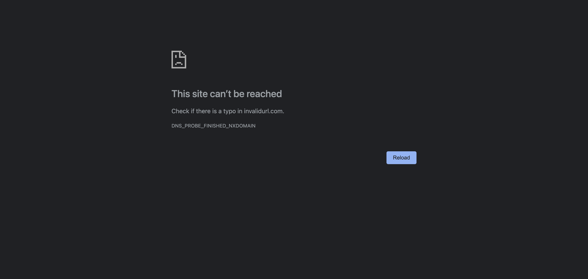
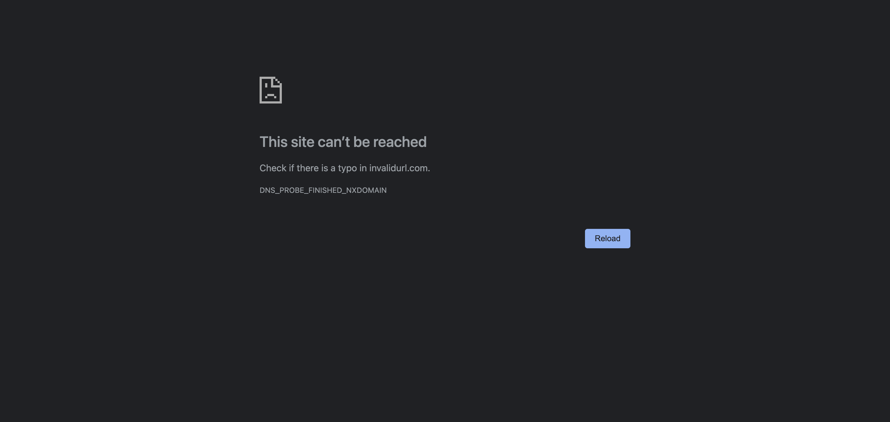
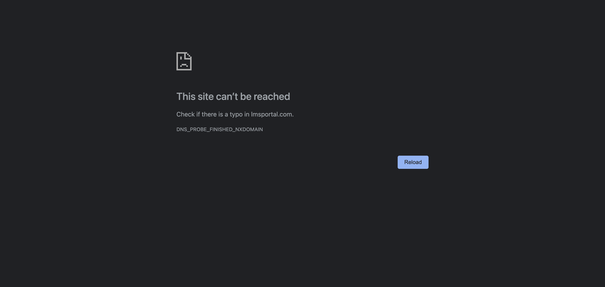
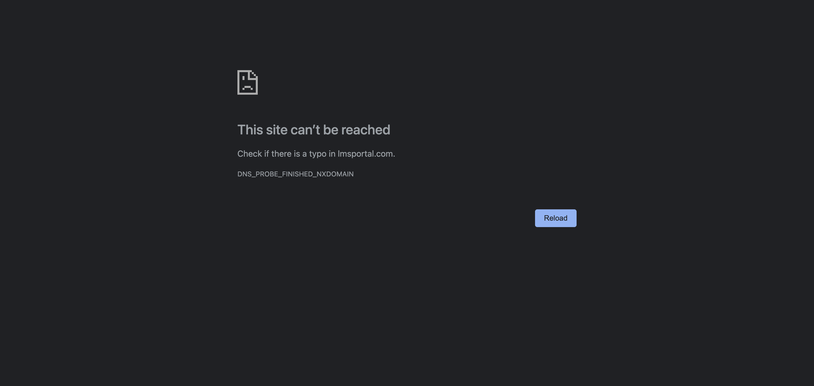

-
Home Page Verification
10:57:31 PM / 00:00:06:889 Fail
Home Page Verification
09.12.2023 10:57:31 PM 09.12.2023 10:57:37 PM 00:00:06:889 · #test-id=1FailVerify admin is able to land on home pageGiven Admin launch the browserWhen Admin gives the correct LMS portal URLmyHooks.Hooks.afterstep(io.cucumber.java.Scenario)My screenshot Then Admin should land on the Home pageStep skippedFailVerify admin is able to land on home page with invalid URLGiven Admin launch the browserWhen Admin gives the invalid LMS portal URLmyHooks.Hooks.afterstep(io.cucumber.java.Scenario)My screenshotThen Admin should receive "404 page not found" error for the invalid URLStep skippedFailAdmin verifies for broken link on the LMS portalGiven Admin launch the browserWhen Admin gives the correct LMS portal URLmyHooks.Hooks.afterstep(io.cucumber.java.Scenario)My screenshot
Then Admin should land on the Home pageStep skippedFailVerify admin is able to land on home page with invalid URLGiven Admin launch the browserWhen Admin gives the invalid LMS portal URLmyHooks.Hooks.afterstep(io.cucumber.java.Scenario)My screenshotThen Admin should receive "404 page not found" error for the invalid URLStep skippedFailAdmin verifies for broken link on the LMS portalGiven Admin launch the browserWhen Admin gives the correct LMS portal URLmyHooks.Hooks.afterstep(io.cucumber.java.Scenario)My screenshot Then Admin should receive "Https response >= 400" error for the LMS linkStep skippedAnd The link is brokenStep skippedFailAdmin verifies correct spellings in all fields on the LMS portalGiven Admin launch the browserWhen Admin gives the correct LMS portal URLmyHooks.Hooks.afterstep(io.cucumber.java.Scenario)My screenshot
Then Admin should receive "Https response >= 400" error for the LMS linkStep skippedAnd The link is brokenStep skippedFailAdmin verifies correct spellings in all fields on the LMS portalGiven Admin launch the browserWhen Admin gives the correct LMS portal URLmyHooks.Hooks.afterstep(io.cucumber.java.Scenario)My screenshot Then Admin should see correct spellings in all fields on the LMS portalStep skippedFailAdmin verifies the presence of the LMS logoGiven Admin launch the browserWhen Admin gives the correct LMS portal URLmyHooks.Hooks.afterstep(io.cucumber.java.Scenario)My screenshot
Then Admin should see correct spellings in all fields on the LMS portalStep skippedFailAdmin verifies the presence of the LMS logoGiven Admin launch the browserWhen Admin gives the correct LMS portal URLmyHooks.Hooks.afterstep(io.cucumber.java.Scenario)My screenshot Then Admin should see correct Logo of the LMSStep skippedFailAdmin verifies that the LMS logo is properly alignedGiven Admin launch the browserWhen Admin gives the correct LMS portal URLmyHooks.Hooks.afterstep(io.cucumber.java.Scenario)My screenshot
Then Admin should see correct Logo of the LMSStep skippedFailAdmin verifies that the LMS logo is properly alignedGiven Admin launch the browserWhen Admin gives the correct LMS portal URLmyHooks.Hooks.afterstep(io.cucumber.java.Scenario)My screenshot Then Admin should see that the Logo is properly alignedStep skippedFailAdmin verifies the presence of the Login buttonGiven Admin launch the browserWhen Admin gives the correct LMS portal URLmyHooks.Hooks.afterstep(io.cucumber.java.Scenario)My screenshot
Then Admin should see that the Logo is properly alignedStep skippedFailAdmin verifies the presence of the Login buttonGiven Admin launch the browserWhen Admin gives the correct LMS portal URLmyHooks.Hooks.afterstep(io.cucumber.java.Scenario)My screenshot Then Admin should see the "Login" button in LMS PortalStep skippedFailAdmin verifies that the Login button is clickable on LMS PortalGiven Admin launch the browserWhen Admin gives the correct LMS portal URLmyHooks.Hooks.afterstep(io.cucumber.java.Scenario)My screenshot
Then Admin should see the "Login" button in LMS PortalStep skippedFailAdmin verifies that the Login button is clickable on LMS PortalGiven Admin launch the browserWhen Admin gives the correct LMS portal URLmyHooks.Hooks.afterstep(io.cucumber.java.Scenario)My screenshot Then Admin should be able to click the "Login" button on LMS PortalStep skipped
Then Admin should be able to click the "Login" button on LMS PortalStep skipped -
Login Page Verification
10:57:38 PM / 00:00:10:926 Fail
Login Page Verification
09.12.2023 10:57:38 PM 09.12.2023 10:57:48 PM 00:00:10:926 · #test-id=68FailVerify Admin is able to land on the Login pageGiven Admin is on the "Home" page of LMS portalmyHooks.Hooks.afterstep(io.cucumber.java.Scenario)My screenshot When Admin clicks the "Login" button on LMS portalStep skippedThen Admin should land on the "Login" page from LMS PortalStep skippedFailAdmin verifies for broken link on the login pageGiven Admin is on the "Home" page of LMS portalmyHooks.Hooks.afterstep(io.cucumber.java.Scenario)My screenshot
When Admin clicks the "Login" button on LMS portalStep skippedThen Admin should land on the "Login" page from LMS PortalStep skippedFailAdmin verifies for broken link on the login pageGiven Admin is on the "Home" page of LMS portalmyHooks.Hooks.afterstep(io.cucumber.java.Scenario)My screenshot When Admin clicks the "Login" button on LMS portalStep skippedThen Admin should receive "Https response >= 400" error for the linkStep skippedAnd The link is brokenStep skippedFailAdmin Verify the header of the login pageGiven Admin is on the "Home" page of LMS portalmyHooks.Hooks.afterstep(io.cucumber.java.Scenario)My screenshot
When Admin clicks the "Login" button on LMS portalStep skippedThen Admin should receive "Https response >= 400" error for the linkStep skippedAnd The link is brokenStep skippedFailAdmin Verify the header of the login pageGiven Admin is on the "Home" page of LMS portalmyHooks.Hooks.afterstep(io.cucumber.java.Scenario)My screenshot When Admin clicks the "Login" button on LMS portalStep skippedThen Admin should see "Please login to LMS application" in the headerStep skippedFailAdmin verifies correct spellings in all fields on the Login pageGiven Admin is on the "Home" page of LMS portalmyHooks.Hooks.afterstep(io.cucumber.java.Scenario)My screenshot
When Admin clicks the "Login" button on LMS portalStep skippedThen Admin should see "Please login to LMS application" in the headerStep skippedFailAdmin verifies correct spellings in all fields on the Login pageGiven Admin is on the "Home" page of LMS portalmyHooks.Hooks.afterstep(io.cucumber.java.Scenario)My screenshot When Admin clicks the "Login" button on LMS portalStep skippedThen Admin should see correct spellings in all fields on the Login pageStep skippedFailAdmin Verify the text fields are present on the login pageGiven Admin is on the "Home" page of LMS portalmyHooks.Hooks.afterstep(io.cucumber.java.Scenario)My screenshot
When Admin clicks the "Login" button on LMS portalStep skippedThen Admin should see correct spellings in all fields on the Login pageStep skippedFailAdmin Verify the text fields are present on the login pageGiven Admin is on the "Home" page of LMS portalmyHooks.Hooks.afterstep(io.cucumber.java.Scenario)My screenshot When Admin clicks the "Login" button on LMS portalStep skippedThen Admin should see two text fields on the login pageStep skippedFailAdmin Verify the text on the first text field on the login pageGiven Admin is on the "Home" page of LMS portalmyHooks.Hooks.afterstep(io.cucumber.java.Scenario)My screenshot
When Admin clicks the "Login" button on LMS portalStep skippedThen Admin should see two text fields on the login pageStep skippedFailAdmin Verify the text on the first text field on the login pageGiven Admin is on the "Home" page of LMS portalmyHooks.Hooks.afterstep(io.cucumber.java.Scenario)My screenshot When Admin clicks the "Login" button on LMS portalStep skippedThen Admin should see "User" in the first text field on the login pageStep skippedFailAdmin Verify asterik next to the user text on the login pageGiven Admin is on the "Home" page of LMS portalmyHooks.Hooks.afterstep(io.cucumber.java.Scenario)My screenshot
When Admin clicks the "Login" button on LMS portalStep skippedThen Admin should see "User" in the first text field on the login pageStep skippedFailAdmin Verify asterik next to the user text on the login pageGiven Admin is on the "Home" page of LMS portalmyHooks.Hooks.afterstep(io.cucumber.java.Scenario)My screenshot When Admin clicks the "Login" button on LMS portalStep skippedThen Admin should see "*" symbol next to User text in the first text field on the login pageStep skippedFailAdmin Verify the text on the second text field in the login pageGiven Admin is on the "Home" page of LMS portalmyHooks.Hooks.afterstep(io.cucumber.java.Scenario)My screenshot
When Admin clicks the "Login" button on LMS portalStep skippedThen Admin should see "*" symbol next to User text in the first text field on the login pageStep skippedFailAdmin Verify the text on the second text field in the login pageGiven Admin is on the "Home" page of LMS portalmyHooks.Hooks.afterstep(io.cucumber.java.Scenario)My screenshot When Admin clicks the "Login" button on LMS portalStep skippedThen Admin should see "Password" in the second text field on the login pageStep skippedFailAdmin Verify asterik next to the password text on the login pageGiven Admin is on the "Home" page of LMS portalmyHooks.Hooks.afterstep(io.cucumber.java.Scenario)My screenshot
When Admin clicks the "Login" button on LMS portalStep skippedThen Admin should see "Password" in the second text field on the login pageStep skippedFailAdmin Verify asterik next to the password text on the login pageGiven Admin is on the "Home" page of LMS portalmyHooks.Hooks.afterstep(io.cucumber.java.Scenario)My screenshot When Admin clicks the "Login" button on LMS portalStep skippedThen Admin should see "*" symbol next to Password text in the second text field on the login pageStep skippedFailAdmin Verify the alignment of the input fields on the login pageGiven Admin is on the "Home" page of LMS portalmyHooks.Hooks.afterstep(io.cucumber.java.Scenario)My screenshot
When Admin clicks the "Login" button on LMS portalStep skippedThen Admin should see "*" symbol next to Password text in the second text field on the login pageStep skippedFailAdmin Verify the alignment of the input fields on the login pageGiven Admin is on the "Home" page of LMS portalmyHooks.Hooks.afterstep(io.cucumber.java.Scenario)My screenshot When Admin clicks the "Login" button on LMS portalStep skippedThen Admin should see input fields on the centre of the login pageStep skippedFailAdmin verifies the presence of the Login button on the login pageGiven Admin is on the "Home" page of LMS portalmyHooks.Hooks.afterstep(io.cucumber.java.Scenario)My screenshot
When Admin clicks the "Login" button on LMS portalStep skippedThen Admin should see input fields on the centre of the login pageStep skippedFailAdmin verifies the presence of the Login button on the login pageGiven Admin is on the "Home" page of LMS portalmyHooks.Hooks.afterstep(io.cucumber.java.Scenario)My screenshot When Admin clicks the "Login" button on LMS portalStep skippedThen Admin should see Login button on the login pageStep skippedFailAdmin Verify the alignment of the Login button on the login pageGiven Admin is on the "Home" page of LMS portalmyHooks.Hooks.afterstep(io.cucumber.java.Scenario)My screenshotWhen Admin clicks the "Login" button on LMS portalStep skippedThen Admin should see Login button on the centre of the login pageStep skippedFailAdmin verifies the presence of the Forgot Username or Password on the login pageGiven Admin is on the "Home" page of LMS portalmyHooks.Hooks.afterstep(io.cucumber.java.Scenario)My screenshot
When Admin clicks the "Login" button on LMS portalStep skippedThen Admin should see Login button on the login pageStep skippedFailAdmin Verify the alignment of the Login button on the login pageGiven Admin is on the "Home" page of LMS portalmyHooks.Hooks.afterstep(io.cucumber.java.Scenario)My screenshotWhen Admin clicks the "Login" button on LMS portalStep skippedThen Admin should see Login button on the centre of the login pageStep skippedFailAdmin verifies the presence of the Forgot Username or Password on the login pageGiven Admin is on the "Home" page of LMS portalmyHooks.Hooks.afterstep(io.cucumber.java.Scenario)My screenshot When Admin clicks the "Login" button on LMS portalStep skippedThen Admin should see Forgot Username or Password linkStep skippedFailAdmin verifies the presence of the Reset Password on the login pageGiven Admin is on the "Home" page of LMS portalmyHooks.Hooks.afterstep(io.cucumber.java.Scenario)My screenshot
When Admin clicks the "Login" button on LMS portalStep skippedThen Admin should see Forgot Username or Password linkStep skippedFailAdmin verifies the presence of the Reset Password on the login pageGiven Admin is on the "Home" page of LMS portalmyHooks.Hooks.afterstep(io.cucumber.java.Scenario)My screenshot When Admin clicks the "Login" button on LMS portalStep skippedThen Admin should see Reset Password linkStep skippedFailAdmin Verify the input text color in User fieldGiven Admin is on the "Home" page of LMS portalmyHooks.Hooks.afterstep(io.cucumber.java.Scenario)My screenshot
When Admin clicks the "Login" button on LMS portalStep skippedThen Admin should see Reset Password linkStep skippedFailAdmin Verify the input text color in User fieldGiven Admin is on the "Home" page of LMS portalmyHooks.Hooks.afterstep(io.cucumber.java.Scenario)My screenshot When Admin clicks the "Login" button on LMS portalStep skippedThen Admin should see User text displayed in gray colorStep skippedFailAdmin Verify the input text color in Password fieldGiven Admin is on the "Home" page of LMS portalmyHooks.Hooks.afterstep(io.cucumber.java.Scenario)My screenshot
When Admin clicks the "Login" button on LMS portalStep skippedThen Admin should see User text displayed in gray colorStep skippedFailAdmin Verify the input text color in Password fieldGiven Admin is on the "Home" page of LMS portalmyHooks.Hooks.afterstep(io.cucumber.java.Scenario)My screenshot When Admin clicks the "Login" button on LMS portalStep skippedThen Admin should see Password text displayed in gray colorStep skipped
When Admin clicks the "Login" button on LMS portalStep skippedThen Admin should see Password text displayed in gray colorStep skipped -
Login Page Valid and Invalid Credential Validations
10:57:49 PM / 00:00:05:510 Fail
Login Page Valid and Invalid Credential Validations
09.12.2023 10:57:49 PM 09.12.2023 10:57:54 PM 00:00:05:510 · #test-id=199FailValidate login with valid credentialsGiven Admin is on the "Login" pagemyHooks.Hooks.afterstep(io.cucumber.java.Scenario)My screenshot When Admin enters valid "username" and "password"
When Admin enters valid "username" and "password"username password Team9testuser BddCoders@9 Step skippedAnd Clicks on "Login" buttonStep skippedThen Admin should land on "Dashboard" page from login pageStep skippedFailValidate login with invalid credentials from Excel "Sheetname" and "RowNumber"FailValidate login with invalid credentials from Excel "Sheetname" and "RowNumber"Given Admin is on the "Login" pagemyHooks.Hooks.afterstep(io.cucumber.java.Scenario)My screenshot When Admin enters sheet "LoginCredentials" and 0Step skippedThen Clicks on "Login" buttonStep skippedFailValidate login with invalid credentials from Excel "Sheetname" and "RowNumber"Given Admin is on the "Login" pagemyHooks.Hooks.afterstep(io.cucumber.java.Scenario)My screenshot
When Admin enters sheet "LoginCredentials" and 0Step skippedThen Clicks on "Login" buttonStep skippedFailValidate login with invalid credentials from Excel "Sheetname" and "RowNumber"Given Admin is on the "Login" pagemyHooks.Hooks.afterstep(io.cucumber.java.Scenario)My screenshot When Admin enters sheet "LoginCredentials" and 1Step skippedThen Clicks on "Login" buttonStep skippedFailValidate login with invalid credentials from Excel "Sheetname" and "RowNumber"Given Admin is on the "Login" pagemyHooks.Hooks.afterstep(io.cucumber.java.Scenario)My screenshot
When Admin enters sheet "LoginCredentials" and 1Step skippedThen Clicks on "Login" buttonStep skippedFailValidate login with invalid credentials from Excel "Sheetname" and "RowNumber"Given Admin is on the "Login" pagemyHooks.Hooks.afterstep(io.cucumber.java.Scenario)My screenshot When Admin enters sheet "LoginCredentials" and 2Step skippedThen Clicks on "Login" buttonStep skippedFailValidate login with invalid credentials from Excel "Sheetname" and "RowNumber"Given Admin is on the "Login" pagemyHooks.Hooks.afterstep(io.cucumber.java.Scenario)My screenshot
When Admin enters sheet "LoginCredentials" and 2Step skippedThen Clicks on "Login" buttonStep skippedFailValidate login with invalid credentials from Excel "Sheetname" and "RowNumber"Given Admin is on the "Login" pagemyHooks.Hooks.afterstep(io.cucumber.java.Scenario)My screenshot When Admin enters sheet "LoginCredentials" and 3Step skippedThen Clicks on "Login" buttonStep skippedFailValidate login with invalid credentials from Excel "Sheetname" and "RowNumber"Given Admin is on the "Login" pagemyHooks.Hooks.afterstep(io.cucumber.java.Scenario)My screenshot
When Admin enters sheet "LoginCredentials" and 3Step skippedThen Clicks on "Login" buttonStep skippedFailValidate login with invalid credentials from Excel "Sheetname" and "RowNumber"Given Admin is on the "Login" pagemyHooks.Hooks.afterstep(io.cucumber.java.Scenario)My screenshot When Admin enters sheet "LoginCredentials" and 4Step skippedThen Clicks on "Login" buttonStep skippedFailValidate login with invalid credentials from Excel "Sheetname" and "RowNumber"Given Admin is on the "Login" pagemyHooks.Hooks.afterstep(io.cucumber.java.Scenario)My screenshot
When Admin enters sheet "LoginCredentials" and 4Step skippedThen Clicks on "Login" buttonStep skippedFailValidate login with invalid credentials from Excel "Sheetname" and "RowNumber"Given Admin is on the "Login" pagemyHooks.Hooks.afterstep(io.cucumber.java.Scenario)My screenshot When Admin enters sheet "LoginCredentials" and 5Step skippedThen Clicks on "Login" buttonStep skippedFailVerify login button action through keyboardGiven Admin is on the "Login" pagemyHooks.Hooks.afterstep(io.cucumber.java.Scenario)My screenshot
When Admin enters sheet "LoginCredentials" and 5Step skippedThen Clicks on "Login" buttonStep skippedFailVerify login button action through keyboardGiven Admin is on the "Login" pagemyHooks.Hooks.afterstep(io.cucumber.java.Scenario)My screenshot When Admin enters valid "username" and "password"
When Admin enters valid "username" and "password"username password Team9testuser BddCoders@9 Step skippedAnd Clicks on "Login" button through keyboardStep skippedThen Admin should land on "Dashboard" page from login pageStep skippedFailVerify login button action through mouse actionGiven Admin is on the "Login" pagemyHooks.Hooks.afterstep(io.cucumber.java.Scenario)My screenshot When Admin enters valid "username" and "password"
When Admin enters valid "username" and "password"username password Team9testuser BddCoders@9 Step skippedAnd Clicks on "Login" button through mouse actionStep skippedThen Admin should land on "Dashboard" page from login pageStep skipped -
Forgot Username and Password Validations
10:57:54 PM / 00:00:05:189 Fail
Forgot Username and Password Validations
09.12.2023 10:57:54 PM 09.12.2023 10:57:59 PM 00:00:05:189 · #test-id=279FailAdmin Verify Forgot Username or Password linkGiven Admin is on the "Login" page for Forgot Username and PasswordmyHooks.Hooks.afterstep(io.cucumber.java.Scenario)My screenshot When Admin clicks on "Forgot Username or Password" linkStep skippedThen Admin should land on "Forgot Username or Password" page from Login pageStep skippedFailAdmin verify broken link for Forgot Username or Password linkGiven Admin is on the "Login" page for Forgot Username and PasswordmyHooks.Hooks.afterstep(io.cucumber.java.Scenario)My screenshot
When Admin clicks on "Forgot Username or Password" linkStep skippedThen Admin should land on "Forgot Username or Password" page from Login pageStep skippedFailAdmin verify broken link for Forgot Username or Password linkGiven Admin is on the "Login" page for Forgot Username and PasswordmyHooks.Hooks.afterstep(io.cucumber.java.Scenario)My screenshot When Admin clicks on "Forgot Username or Password" linkStep skippedThen Admin should receive "Https response >= 400" error for the Forgot Username/Password linkStep skippedAnd The link is broken for Forgot Username/PasswordStep skippedFailAdmin Verify the Email text colorGiven Admin is on the "Login" page for Forgot Username and PasswordmyHooks.Hooks.afterstep(io.cucumber.java.Scenario)My screenshot
When Admin clicks on "Forgot Username or Password" linkStep skippedThen Admin should receive "Https response >= 400" error for the Forgot Username/Password linkStep skippedAnd The link is broken for Forgot Username/PasswordStep skippedFailAdmin Verify the Email text colorGiven Admin is on the "Login" page for Forgot Username and PasswordmyHooks.Hooks.afterstep(io.cucumber.java.Scenario)My screenshot When Admin clicks on "Forgot Username or Password" linkStep skippedThen Admin should see "Email" text in gray colorStep skippedFailAdmin Verify Email text in text fieldGiven Admin is on the "Login" page for Forgot Username and PasswordmyHooks.Hooks.afterstep(io.cucumber.java.Scenario)My screenshot
When Admin clicks on "Forgot Username or Password" linkStep skippedThen Admin should see "Email" text in gray colorStep skippedFailAdmin Verify Email text in text fieldGiven Admin is on the "Login" page for Forgot Username and PasswordmyHooks.Hooks.afterstep(io.cucumber.java.Scenario)My screenshot When Admin clicks on "Forgot Username or Password" linkStep skippedThen Admin should see "Email" in text fieldStep skippedFailAdmin Verify Send Link button is presentGiven Admin is on the "Login" page for Forgot Username and PasswordmyHooks.Hooks.afterstep(io.cucumber.java.Scenario)My screenshot
When Admin clicks on "Forgot Username or Password" linkStep skippedThen Admin should see "Email" in text fieldStep skippedFailAdmin Verify Send Link button is presentGiven Admin is on the "Login" page for Forgot Username and PasswordmyHooks.Hooks.afterstep(io.cucumber.java.Scenario)My screenshot When Admin clicks on "Forgot Username or Password" linkStep skippedThen Admin should see "Send Link" buttonStep skippedFailAdmin Verify asterik near to the Email textGiven Admin is on the "Login" page for Forgot Username and PasswordmyHooks.Hooks.afterstep(io.cucumber.java.Scenario)My screenshot
When Admin clicks on "Forgot Username or Password" linkStep skippedThen Admin should see "Send Link" buttonStep skippedFailAdmin Verify asterik near to the Email textGiven Admin is on the "Login" page for Forgot Username and PasswordmyHooks.Hooks.afterstep(io.cucumber.java.Scenario)My screenshot When Admin clicks on "Forgot Username or Password" linkStep skippedThen Admin should see * symbol next to the text EmailStep skippedFailAdmin Verify the text spellingGiven Admin is on the "Login" page for Forgot Username and PasswordmyHooks.Hooks.afterstep(io.cucumber.java.Scenario)My screenshot
When Admin clicks on "Forgot Username or Password" linkStep skippedThen Admin should see * symbol next to the text EmailStep skippedFailAdmin Verify the text spellingGiven Admin is on the "Login" page for Forgot Username and PasswordmyHooks.Hooks.afterstep(io.cucumber.java.Scenario)My screenshot When Admin clicks on "Forgot Username or Password" linkStep skippedThen Admin should see correct spellings in all fieldsStep skippedFailAdmin Verify the alignment of the Send Link buttonGiven Admin is on the "Login" page for Forgot Username and PasswordmyHooks.Hooks.afterstep(io.cucumber.java.Scenario)My screenshot
When Admin clicks on "Forgot Username or Password" linkStep skippedThen Admin should see correct spellings in all fieldsStep skippedFailAdmin Verify the alignment of the Send Link buttonGiven Admin is on the "Login" page for Forgot Username and PasswordmyHooks.Hooks.afterstep(io.cucumber.java.Scenario)My screenshot When Admin clicks on "Forgot Username or Password" linkStep skippedThen Admin should see "Send Link" button in center of the pageStep skipped
When Admin clicks on "Forgot Username or Password" linkStep skippedThen Admin should see "Send Link" button in center of the pageStep skipped -
Send Link Validations in Forgot Username and Password Page
10:57:59 PM / 00:00:01:318 Fail
Send Link Validations in Forgot Username and Password Page
09.12.2023 10:57:59 PM 09.12.2023 10:58:01 PM 00:00:01:318 · #test-id=346FailValidate Email sent for Forgot Username or Password with valid email idGiven Admin is in "Forgot Username and Password" pagemyHooks.Hooks.afterstep(io.cucumber.java.Scenario)My screenshot When Admin enters valid "
When Admin enters valid "" emailid bddcoders@gmail.com Step skippedAnd Admin clicks "Send Link" button on Forgot Username and Password pageStep skippedThen Admin should receive link in mail to Reset Username/PasswordStep skippedFailValidate Email sent for Forgot Username or Password with invalid email idGiven Admin is in "Forgot Username and Password" pagemyHooks.Hooks.afterstep(io.cucumber.java.Scenario)My screenshot When Admin enters invalid "
When Admin enters invalid "" emailid bddcoders@gggmail.com Step skippedAnd Admin clicks "Send Link" button on Forgot Username and Password pageStep skippedThen Admin should not receive link in mail to Reset Username/PasswordStep skipped -
Reset Password Validations
10:58:01 PM / 00:00:04:803 Fail
Reset Password Validations
09.12.2023 10:58:01 PM 09.12.2023 10:58:05 PM 00:00:04:803 · #test-id=367FailVerify Reset Password linkGiven Admin is on "Login" pagemyHooks.Hooks.afterstep(io.cucumber.java.Scenario)My screenshot When Admin clicks on "Reset Password" link from Login pageStep skippedThen Admin should land on "Reset Password" page from Login pageStep skippedFailVerify text in the Reset Password pageGiven Admin is on "Login" pagemyHooks.Hooks.afterstep(io.cucumber.java.Scenario)My screenshot
When Admin clicks on "Reset Password" link from Login pageStep skippedThen Admin should land on "Reset Password" page from Login pageStep skippedFailVerify text in the Reset Password pageGiven Admin is on "Login" pagemyHooks.Hooks.afterstep(io.cucumber.java.Scenario)My screenshot When Admin clicks on "Reset Password" link from Login pageStep skippedThen Admin should see correct spellings for all fields in "Reset Password" pageStep skippedFailVerify the presence of Submit button in Reset Password pageGiven Admin is on "Login" pagemyHooks.Hooks.afterstep(io.cucumber.java.Scenario)My screenshot
When Admin clicks on "Reset Password" link from Login pageStep skippedThen Admin should see correct spellings for all fields in "Reset Password" pageStep skippedFailVerify the presence of Submit button in Reset Password pageGiven Admin is on "Login" pagemyHooks.Hooks.afterstep(io.cucumber.java.Scenario)My screenshot When Admin clicks on "Reset Password" link from Login pageStep skippedThen Admin should see "Submit" button in Reset Password pageStep skippedFailVerify the alignment of the Submit button in Reset Password pageGiven Admin is on "Login" pagemyHooks.Hooks.afterstep(io.cucumber.java.Scenario)My screenshot
When Admin clicks on "Reset Password" link from Login pageStep skippedThen Admin should see "Submit" button in Reset Password pageStep skippedFailVerify the alignment of the Submit button in Reset Password pageGiven Admin is on "Login" pagemyHooks.Hooks.afterstep(io.cucumber.java.Scenario)My screenshot When Admin clicks on "Reset Password" link from Login pageStep skippedThen Admin should see "Submit" button in the center of the Reset Password pageStep skippedFailVerify text box is present in the Reset Password pageGiven Admin is on "Login" pagemyHooks.Hooks.afterstep(io.cucumber.java.Scenario)My screenshot
When Admin clicks on "Reset Password" link from Login pageStep skippedThen Admin should see "Submit" button in the center of the Reset Password pageStep skippedFailVerify text box is present in the Reset Password pageGiven Admin is on "Login" pagemyHooks.Hooks.afterstep(io.cucumber.java.Scenario)My screenshot When Admin clicks on "Reset Password" link from Login pageStep skippedThen Admin should see two text box in the Reset Password pageStep skippedFailVerify First label text on the Reset Password pageGiven Admin is on "Login" pagemyHooks.Hooks.afterstep(io.cucumber.java.Scenario)My screenshot
When Admin clicks on "Reset Password" link from Login pageStep skippedThen Admin should see two text box in the Reset Password pageStep skippedFailVerify First label text on the Reset Password pageGiven Admin is on "Login" pagemyHooks.Hooks.afterstep(io.cucumber.java.Scenario)My screenshot When Admin clicks on "Reset Password" link from Login pageStep skippedThen Admin should see "Type in new Password" in the first label text on the Reset Password pageStep skippedFailVerify Second label text on the Reset Password pageGiven Admin is on "Login" pagemyHooks.Hooks.afterstep(io.cucumber.java.Scenario)My screenshot
When Admin clicks on "Reset Password" link from Login pageStep skippedThen Admin should see "Type in new Password" in the first label text on the Reset Password pageStep skippedFailVerify Second label text on the Reset Password pageGiven Admin is on "Login" pagemyHooks.Hooks.afterstep(io.cucumber.java.Scenario)My screenshot When Admin clicks on "Reset Password" link from Login pageStep skippedThen Admin should see "Retype Password" in the second label text on the Reset Password pageStep skippedFailVerify both the text box is in disabled state on the Reset Password pageGiven Admin is on "Login" pagemyHooks.Hooks.afterstep(io.cucumber.java.Scenario)My screenshot
When Admin clicks on "Reset Password" link from Login pageStep skippedThen Admin should see "Retype Password" in the second label text on the Reset Password pageStep skippedFailVerify both the text box is in disabled state on the Reset Password pageGiven Admin is on "Login" pagemyHooks.Hooks.afterstep(io.cucumber.java.Scenario)My screenshot When Admin clicks on "Reset Password" link from Login pageStep skippedThen Admin should see both the text box in disabled state on the Reset Password pageStep skipped
When Admin clicks on "Reset Password" link from Login pageStep skippedThen Admin should see both the text box in disabled state on the Reset Password pageStep skipped -
Reset Password Details Validations
10:58:05 PM / 00:00:03:613 Fail
Reset Password Details Validations
09.12.2023 10:58:05 PM 09.12.2023 10:58:09 PM 00:00:03:613 · #test-id=432FailVerify text box is enabled in Type in new Password fieldGiven Admin is on "Reset Password" pagemyHooks.Hooks.afterstep(io.cucumber.java.Scenario)My screenshot When Admin clicks on "Type in new Password" fieldStep skippedThen Admin should see Type in new Password text box is in enabled stateStep skippedFailVerify text box is enabled in Retype Password fieldGiven Admin is on "Reset Password" pagemyHooks.Hooks.afterstep(io.cucumber.java.Scenario)My screenshot
When Admin clicks on "Type in new Password" fieldStep skippedThen Admin should see Type in new Password text box is in enabled stateStep skippedFailVerify text box is enabled in Retype Password fieldGiven Admin is on "Reset Password" pagemyHooks.Hooks.afterstep(io.cucumber.java.Scenario)My screenshot When Admin clicks on "ReType Password" fieldStep skippedThen Admin should see ReType Password text box is in enabled stateStep skippedFailValidate Reset Password with valid detailsGiven Admin is on "Reset Password" pagemyHooks.Hooks.afterstep(io.cucumber.java.Scenario)My screenshot
When Admin clicks on "ReType Password" fieldStep skippedThen Admin should see ReType Password text box is in enabled stateStep skippedFailValidate Reset Password with valid detailsGiven Admin is on "Reset Password" pagemyHooks.Hooks.afterstep(io.cucumber.java.Scenario)My screenshot When Admin enters same valid password on "newpassword" and "retypepassword"
When Admin enters same valid password on "newpassword" and "retypepassword"newpassword retypepassword Validpwd@9 Validpwd@9 Step skippedAnd Admin clicks "Submit" buttonStep skippedThen Admin should receive "Your password has been reset. Please click here to login"Step skippedFailValidate Reset Password with invalid detailsGiven Admin is on "Reset Password" pagemyHooks.Hooks.afterstep(io.cucumber.java.Scenario)My screenshot When Admin enters invalid same password on "newpassword" and "retypepassword"
When Admin enters invalid same password on "newpassword" and "retypepassword"newpassword retypepassword invalid%& invalid%& Step skippedAnd Admin clicks "Submit" buttonStep skippedThen Admin should see error message "Please try again"Step skippedFailValidate Reset Password with empty fieldsGiven Admin is on "Reset Password" pagemyHooks.Hooks.afterstep(io.cucumber.java.Scenario)My screenshot When Admin clicks on "Submit" button with empty fieldsStep skippedThen Admin should see error message "Please try again"Step skippedFailValidate Reset Password with mismatch valuesGiven Admin is on "Reset Password" pagemyHooks.Hooks.afterstep(io.cucumber.java.Scenario)My screenshot
When Admin clicks on "Submit" button with empty fieldsStep skippedThen Admin should see error message "Please try again"Step skippedFailValidate Reset Password with mismatch valuesGiven Admin is on "Reset Password" pagemyHooks.Hooks.afterstep(io.cucumber.java.Scenario)My screenshot When Admin enters mismatch values on "newpassword" and "retypepassword"
When Admin enters mismatch values on "newpassword" and "retypepassword"newpassword retypepassword Validpwd@9 Validpwd Step skippedAnd Admin clicks "Submit" buttonStep skippedThen Admin should see error message "Please try again"Step skipped -
Dashboard Page
10:58:09 PM / 00:00:10:161 Fail
Dashboard Page
09.12.2023 10:58:09 PM 09.12.2023 10:58:19 PM 00:00:10:161 · #test-id=487FailVerify Admin lands on Manage Program as Dashboard page after loginGiven Admin is on "Login" page for Dashboard ValidationmyHooks.Hooks.afterstep(io.cucumber.java.Scenario)My screenshot When Admin enter valid "username" and "password"
When Admin enter valid "username" and "password"username password Team9testuser BddCoders@9 Step skippedAnd Admin clicks "Login" button from Login pageStep skippedThen Admin should see "Manage Program" as header for Dashboard pageStep skippedFailVerify the response time for Dashboard pageGiven Admin is on "Login" page for Dashboard ValidationmyHooks.Hooks.afterstep(io.cucumber.java.Scenario)My screenshot When Admin enter valid "username" and "password"
When Admin enter valid "username" and "password"username password Team9testuser BddCoders@9 Step skippedAnd Admin clicks "Login" button from Login pageStep skippedThen Admin see Maximum navigation time in milliseconds, defaults to 30 seconds for Dashboard pageStep skippedFailVerify broken link on the Dashboard pageGiven Admin is on "Login" page for Dashboard ValidationmyHooks.Hooks.afterstep(io.cucumber.java.Scenario)My screenshot When Admin enter valid "username" and "password"
When Admin enter valid "username" and "password"username password Team9testuser BddCoders@9 Step skippedAnd Admin clicks "Login" button from Login pageStep skippedThen Admin should receive "Https response code greater than or equal to 400" error for the Dashboard page linkStep skippedAnd The link is broken for Dashboard pageStep skippedFailVerify LMS title on Dashboard pageGiven Admin is on "Login" page for Dashboard ValidationmyHooks.Hooks.afterstep(io.cucumber.java.Scenario)My screenshot When Admin enter valid "username" and "password"
When Admin enter valid "username" and "password"username password Team9testuser BddCoders@9 Step skippedAnd Admin clicks "Login" button from Login pageStep skippedThen Admin should see "LMS - Learning Management System" as title on Dashboard pageStep skippedFailVerify LMS title alignment on Dashboard pageGiven Admin is on "Login" page for Dashboard ValidationmyHooks.Hooks.afterstep(io.cucumber.java.Scenario)My screenshot When Admin enter valid "username" and "password"
When Admin enter valid "username" and "password"username password Team9testuser BddCoders@9 Step skippedAnd Admin clicks "Login" button from Login pageStep skippedThen Admin should see LMS title on the top left corner of the Manage Program page for Dashboard pageStep skippedFailValidate navigation bar text on Dashboard pageGiven Admin is on "Login" page for Dashboard ValidationmyHooks.Hooks.afterstep(io.cucumber.java.Scenario)My screenshot When Admin enter valid "username" and "password"
When Admin enter valid "username" and "password"username password Team9testuser BddCoders@9 Step skippedAnd Admin clicks "Login" button from Login pageStep skippedThen Admin should see correct spelling on navigation bar text for Dashboard pageStep skippedFailValidate LMS title has correct spelling and spaceGiven Admin is on "Login" page for Dashboard ValidationmyHooks.Hooks.afterstep(io.cucumber.java.Scenario)My screenshot When Admin enter valid "username" and "password"
When Admin enter valid "username" and "password"username password Team9testuser BddCoders@9 Step skippedAnd Admin clicks "Login" button from Login pageStep skippedThen Admin should see correct spelling and space in LMS titleStep skippedFailValidate alignment for navigation bar on Dashboard pageGiven Admin is on "Login" page for Dashboard ValidationmyHooks.Hooks.afterstep(io.cucumber.java.Scenario)My screenshot When Admin enter valid "username" and "password"
When Admin enter valid "username" and "password"username password Team9testuser BddCoders@9 Step skippedAnd Admin clicks "Login" button from Login pageStep skippedThen Admin should see the navigation bar text on the top right side on Dashboard pageStep skippedFailValidate navigation bar order 1st StudentGiven Admin is on "Login" page for Dashboard ValidationmyHooks.Hooks.afterstep(io.cucumber.java.Scenario)My screenshot When Admin enter valid "username" and "password"
When Admin enter valid "username" and "password"username password Team9testuser BddCoders@9 Step skippedAnd Admin clicks "Login" button from Login pageStep skippedThen Admin should see "Student" in the 1st placeStep skippedFailValidate navigation bar order 2nd ProgramGiven Admin is on "Login" page for Dashboard ValidationmyHooks.Hooks.afterstep(io.cucumber.java.Scenario)My screenshot When Admin enter valid "username" and "password"
When Admin enter valid "username" and "password"username password Team9testuser BddCoders@9 Step skippedAnd Admin clicks "Login" button from Login pageStep skippedThen Admin should see "Program" in the 2nd placeStep skippedFailValidate navigation bar order 3rd BatchGiven Admin is on "Login" page for Dashboard ValidationmyHooks.Hooks.afterstep(io.cucumber.java.Scenario)My screenshot When Admin enter valid "username" and "password"
When Admin enter valid "username" and "password"username password Team9testuser BddCoders@9 Step skippedAnd Admin clicks "Login" button from Login pageStep skippedThen Admin should see "Batch" in the 3rd placeStep skippedFailValidate navigation bar order 4th ClassGiven Admin is on "Login" page for Dashboard ValidationmyHooks.Hooks.afterstep(io.cucumber.java.Scenario)My screenshot When Admin enter valid "username" and "password"
When Admin enter valid "username" and "password"username password Team9testuser BddCoders@9 Step skippedAnd Admin clicks "Login" button from Login pageStep skippedThen Admin should see "Class" in the 4th placeStep skippedFailValidate navigation bar order 5th UserGiven Admin is on "Login" page for Dashboard ValidationmyHooks.Hooks.afterstep(io.cucumber.java.Scenario)My screenshot When Admin enter valid "username" and "password"
When Admin enter valid "username" and "password"username password Team9testuser BddCoders@9 Step skippedAnd Admin clicks "Login" button from Login pageStep skippedThen Admin should see "User" in the 5th placeStep skippedFailValidate navigation bar order 6th AssignmentGiven Admin is on "Login" page for Dashboard ValidationmyHooks.Hooks.afterstep(io.cucumber.java.Scenario)My screenshot When Admin enter valid "username" and "password"
When Admin enter valid "username" and "password"username password Team9testuser BddCoders@9 Step skippedAnd Admin clicks "Login" button from Login pageStep skippedThen Admin should see "Assignment" in the 6th placeStep skippedFailValidate navigation bar order 7th AttendanceGiven Admin is on "Login" page for Dashboard ValidationmyHooks.Hooks.afterstep(io.cucumber.java.Scenario)My screenshot When Admin enter valid "username" and "password"
When Admin enter valid "username" and "password"username password Team9testuser BddCoders@9 Step skippedAnd Admin clicks "Login" button from Login pageStep skippedThen Admin should see "Attendance" in the 7th placeStep skippedFailValidate navigation bar order 8th LogoutGiven Admin is on "Login" page for Dashboard ValidationmyHooks.Hooks.afterstep(io.cucumber.java.Scenario)My screenshot When Admin enter valid "username" and "password"
When Admin enter valid "username" and "password"username password Team9testuser BddCoders@9 Step skippedAnd Admin clicks "Login" button from Login pageStep skippedThen Admin should see "Logout" in the 8th placeStep skipped -
Logout Funtion
10:58:19 PM / 00:00:00:003 Pass
Logout Funtion
09.12.2023 10:58:19 PM 09.12.2023 10:58:19 PM 00:00:00:003 · #test-id=650PassVerify Logout button functionGiven Admin is on "Dashboard" page for logoutWhen Admin clicks "Logout" button on navigation barThen Admin should land on "Login" page after clicking logout -
User Validates the register page in DS Algo
10:58:19 PM / 00:00:00:341 Fail
User Validates the register page in DS Algo
09.12.2023 10:58:19 PM 09.12.2023 10:58:20 PM 00:00:00:341 · #test-id=659FailUser launch home page of an dsalgo projectGiven The user opens DS Algo portal linkStep undefinedWhen The user clicks the "Get Started" buttonStep skippedThen The user should be redirected to the home pageStep skippedFailThe user is presented with error message for empty fields below Username textboxGiven The user opens Register PageStep undefinedWhen The user clicks "Register" button with all fields emptyStep skippedThen It should display an error "Please fill out this field." below Username textboxStep skippedFailThe user is presented with error message for empty fields below Password textboxGiven The user opens Register PageStep undefinedWhen The user clicks "Register" button after entering username with other fields emptyusername Numpy@sdet117_1 Step skippedThen It should display an error "Please fill out this field." below Password textboxStep skippedFailThe user is presented with error message for empty fields below Password Confirmation textboxGiven The user opens Register PageStep undefinedWhen The user clicks "Register" button after entering "username" and "password" with Password Confirmation field emptyusername password Numpy@sdet117_1 testpassword Step skippedThen It should display an error "Please fill out this field." below Password Confirmation textboxStep skippedFailThe user is presented with error message for invalid usernameGiven The user opens Register PageStep undefinedWhen The user enters a "username" with characters other than Letters, digits and "@/./+/-/_"username password password confirmation &**&**& testpassword testpassword Step skippedThen It should display an error message "Please enter a valid username"Step skippedFailThe user is presented with error message for username already existsGiven The user opens Register PageStep undefinedWhen The user enters a valid existing "username" with "password" and "password confirmation"username password password confirmation Numpy@sdet117_1 RT56YUabc RT56YUabc Step skippedThen It should display an error message "Username already exists"Step skippedFailThe user is presented with error message for password mismatchGiven The user opens Register PageStep undefinedWhen The user clicks "Register" button after entering valid "username" and different passwords in "password" and "password confirmation" fieldsusername password password confirmation Numpy@sdet117_1 testpassword testpassword1 Step skippedThen It should display an error message "password_mismatch:The two password fields didn’t match."Step skippedFailThe user is presented with error message for password with characters less than 8Given The user opens Register PageStep undefinedWhen he user enters a valid "username" and "password" with characters less than 8username password password confirmation Numpy@sdet117_1 a1b2c3d a1b2c3d Step skippedThen It should display an error message "Password should contain at least 8 characters"Step skippedFailThe user is presented with error message for password with only numbersGiven The user opens Register PageStep undefinedWhen The user enters a valid "username" and "password" with only numbersusername password password confirmation Numpy@sdet117_1 12345678 12345678 Step skippedThen It should display an error message "Password can’t be entirely numeric."Step skippedFailThe user is presented with error message for password too similar to your other personal informationGiven The user opens Register PageStep undefinedWhen The user enters a valid "username" and "password" similar to usernameusername password password confirmation Numpy@sdet117_1 testsdet117 testsdet117 Step skippedThen It should display an error message "password can’t be too similar to your other personal information."Step skippedFailThe user is presented with error message for commonly used passwordGiven The user opens Register PageStep undefinedWhen The user enters a valid "username" and commonly used password "password"username password password confirmation Numpy@sdet117_1 Welcome1 Welcome1 Step skippedThen It should display an error message "Password can’t be commonly used password"Step skippedFailThe user is succesfully able to registerGiven The user opens Register PageStep undefinedWhen The user enters a valid "username" and "password" and "password confirmation"username password password confirmation NumpyTesters_3 RT56YU@78 RT56YU@78 Step skippedThen The user should be redirected to Homepage with the message "New Account Created. You are logged in as NumpyTesters_3"Step skippedFailThe user is able to signout from the registered pageGiven The user is in the Sign in pageStep undefinedWhen The user clicks the "Sign Out" linkStep skippedThen The user should be redirected to the homepage with the message "Logged out successfully"Step skipped
-
org.openqa.selenium.WebDriverException
73 tests
org.openqa.selenium.WebDriverException
73 failedStatus Timestamp TestName Fail 22:57:31 PM When Admin gives the correct LMS portal URL Home Page Verification.Verify admin is able to land on home page.When Admin gives the correct LMS portal URLFail 22:57:33 PM When Admin gives the invalid LMS portal URL Home Page Verification.Verify admin is able to land on home page with invalid URL.When Admin gives the invalid LMS portal URLFail 22:57:34 PM When Admin gives the correct LMS portal URL Home Page Verification.Admin verifies for broken link on the LMS portal.When Admin gives the correct LMS portal URLFail 22:57:34 PM When Admin gives the correct LMS portal URL Home Page Verification.Admin verifies correct spellings in all fields on the LMS portal.When Admin gives the correct LMS portal URLFail 22:57:35 PM When Admin gives the correct LMS portal URL Home Page Verification.Admin verifies the presence of the LMS logo.When Admin gives the correct LMS portal URLFail 22:57:36 PM When Admin gives the correct LMS portal URL Home Page Verification.Admin verifies that the LMS logo is properly aligned.When Admin gives the correct LMS portal URLFail 22:57:36 PM When Admin gives the correct LMS portal URL Home Page Verification.Admin verifies the presence of the Login button.When Admin gives the correct LMS portal URLFail 22:57:37 PM When Admin gives the correct LMS portal URL Home Page Verification.Admin verifies that the Login button is clickable on LMS Portal.When Admin gives the correct LMS portal URLFail 22:57:38 PM Given Admin is on the "Home" page of LMS portal Login Page Verification.Verify Admin is able to land on the Login page.Given Admin is on the "Home" page of LMS portalFail 22:57:38 PM Given Admin is on the "Home" page of LMS portal Login Page Verification.Admin verifies for broken link on the login page.Given Admin is on the "Home" page of LMS portalFail 22:57:39 PM Given Admin is on the "Home" page of LMS portal Login Page Verification.Admin Verify the header of the login page.Given Admin is on the "Home" page of LMS portalFail 22:57:39 PM Given Admin is on the "Home" page of LMS portal Login Page Verification.Admin verifies correct spellings in all fields on the Login page.Given Admin is on the "Home" page of LMS portalFail 22:57:40 PM Given Admin is on the "Home" page of LMS portal Login Page Verification.Admin Verify the text fields are present on the login page.Given Admin is on the "Home" page of LMS portalFail 22:57:41 PM Given Admin is on the "Home" page of LMS portal Login Page Verification.Admin Verify the text on the first text field on the login page.Given Admin is on the "Home" page of LMS portalFail 22:57:41 PM Given Admin is on the "Home" page of LMS portal Login Page Verification.Admin Verify asterik next to the user text on the login page.Given Admin is on the "Home" page of LMS portalFail 22:57:42 PM Given Admin is on the "Home" page of LMS portal Login Page Verification.Admin Verify the text on the second text field in the login page.Given Admin is on the "Home" page of LMS portalFail 22:57:43 PM Given Admin is on the "Home" page of LMS portal Login Page Verification.Admin Verify asterik next to the password text on the login page.Given Admin is on the "Home" page of LMS portalFail 22:57:44 PM Given Admin is on the "Home" page of LMS portal Login Page Verification.Admin Verify the alignment of the input fields on the login page.Given Admin is on the "Home" page of LMS portalFail 22:57:45 PM Given Admin is on the "Home" page of LMS portal Login Page Verification.Admin verifies the presence of the Login button on the login page.Given Admin is on the "Home" page of LMS portalFail 22:57:45 PM Given Admin is on the "Home" page of LMS portal Login Page Verification.Admin Verify the alignment of the Login button on the login page.Given Admin is on the "Home" page of LMS portalFail 22:57:46 PM Given Admin is on the "Home" page of LMS portal Login Page Verification.Admin verifies the presence of the Forgot Username or Password on the login page.Given Admin is on the "Home" page of LMS portalFail 22:57:47 PM Given Admin is on the "Home" page of LMS portal Login Page Verification.Admin verifies the presence of the Reset Password on the login page.Given Admin is on the "Home" page of LMS portalFail 22:57:47 PM Given Admin is on the "Home" page of LMS portal Login Page Verification.Admin Verify the input text color in User field.Given Admin is on the "Home" page of LMS portalFail 22:57:48 PM Given Admin is on the "Home" page of LMS portal Login Page Verification.Admin Verify the input text color in Password field.Given Admin is on the "Home" page of LMS portalFail 22:57:49 PM Given Admin is on the "Login" page Login Page Valid and Invalid Credential Validations.Validate login with valid credentials.Given Admin is on the "Login" pageFail 22:57:49 PM Given Admin is on the "Login" page Login Page Valid and Invalid Credential Validations.Validate login with invalid credentials from Excel "Sheetname" and "RowNumber".Given Admin is on the "Login" pageFail 22:57:50 PM Given Admin is on the "Login" page Login Page Valid and Invalid Credential Validations.Validate login with invalid credentials from Excel "Sheetname" and "RowNumber".Given Admin is on the "Login" pageFail 22:57:50 PM Given Admin is on the "Login" page Login Page Valid and Invalid Credential Validations.Validate login with invalid credentials from Excel "Sheetname" and "RowNumber".Given Admin is on the "Login" pageFail 22:57:51 PM Given Admin is on the "Login" page Login Page Valid and Invalid Credential Validations.Validate login with invalid credentials from Excel "Sheetname" and "RowNumber".Given Admin is on the "Login" pageFail 22:57:52 PM Given Admin is on the "Login" page Login Page Valid and Invalid Credential Validations.Validate login with invalid credentials from Excel "Sheetname" and "RowNumber".Given Admin is on the "Login" pageFail 22:57:52 PM Given Admin is on the "Login" page Login Page Valid and Invalid Credential Validations.Validate login with invalid credentials from Excel "Sheetname" and "RowNumber".Given Admin is on the "Login" pageFail 22:57:53 PM Given Admin is on the "Login" page Login Page Valid and Invalid Credential Validations.Verify login button action through keyboard.Given Admin is on the "Login" pageFail 22:57:53 PM Given Admin is on the "Login" page Login Page Valid and Invalid Credential Validations.Verify login button action through mouse action.Given Admin is on the "Login" pageFail 22:57:54 PM Given Admin is on the "Login" page for Forgot Username and Password Forgot Username and Password Validations.Admin Verify Forgot Username or Password link.Given Admin is on the "Login" page for Forgot Username and PasswordFail 22:57:55 PM Given Admin is on the "Login" page for Forgot Username and Password Forgot Username and Password Validations.Admin verify broken link for Forgot Username or Password link.Given Admin is on the "Login" page for Forgot Username and PasswordFail 22:57:55 PM Given Admin is on the "Login" page for Forgot Username and Password Forgot Username and Password Validations.Admin Verify the Email text color.Given Admin is on the "Login" page for Forgot Username and PasswordFail 22:57:56 PM Given Admin is on the "Login" page for Forgot Username and Password Forgot Username and Password Validations.Admin Verify Email text in text field.Given Admin is on the "Login" page for Forgot Username and PasswordFail 22:57:57 PM Given Admin is on the "Login" page for Forgot Username and Password Forgot Username and Password Validations.Admin Verify Send Link button is present.Given Admin is on the "Login" page for Forgot Username and PasswordFail 22:57:57 PM Given Admin is on the "Login" page for Forgot Username and Password Forgot Username and Password Validations.Admin Verify asterik near to the Email text.Given Admin is on the "Login" page for Forgot Username and PasswordFail 22:57:58 PM Given Admin is on the "Login" page for Forgot Username and Password Forgot Username and Password Validations.Admin Verify the text spelling.Given Admin is on the "Login" page for Forgot Username and PasswordFail 22:57:59 PM Given Admin is on the "Login" page for Forgot Username and Password Forgot Username and Password Validations.Admin Verify the alignment of the Send Link button.Given Admin is on the "Login" page for Forgot Username and PasswordFail 22:57:59 PM Given Admin is in "Forgot Username and Password" page Send Link Validations in Forgot Username and Password Page.Validate Email sent for Forgot Username or Password with valid email id.Given Admin is in "Forgot Username and Password" pageFail 22:58:00 PM Given Admin is in "Forgot Username and Password" page Send Link Validations in Forgot Username and Password Page.Validate Email sent for Forgot Username or Password with invalid email id.Given Admin is in "Forgot Username and Password" pageFail 22:58:01 PM Given Admin is on "Login" page Reset Password Validations.Verify Reset Password link.Given Admin is on "Login" pageFail 22:58:01 PM Given Admin is on "Login" page Reset Password Validations.Verify text in the Reset Password page.Given Admin is on "Login" pageFail 22:58:02 PM Given Admin is on "Login" page Reset Password Validations.Verify the presence of Submit button in Reset Password page.Given Admin is on "Login" pageFail 22:58:02 PM Given Admin is on "Login" page Reset Password Validations.Verify the alignment of the Submit button in Reset Password page.Given Admin is on "Login" pageFail 22:58:03 PM Given Admin is on "Login" page Reset Password Validations.Verify text box is present in the Reset Password page.Given Admin is on "Login" pageFail 22:58:04 PM Given Admin is on "Login" page Reset Password Validations.Verify First label text on the Reset Password page.Given Admin is on "Login" pageFail 22:58:04 PM Given Admin is on "Login" page Reset Password Validations.Verify Second label text on the Reset Password page.Given Admin is on "Login" pageFail 22:58:05 PM Given Admin is on "Login" page Reset Password Validations.Verify both the text box is in disabled state on the Reset Password page.Given Admin is on "Login" pageFail 22:58:05 PM Given Admin is on "Reset Password" page Reset Password Details Validations.Verify text box is enabled in Type in new Password field.Given Admin is on "Reset Password" pageFail 22:58:06 PM Given Admin is on "Reset Password" page Reset Password Details Validations.Verify text box is enabled in Retype Password field.Given Admin is on "Reset Password" pageFail 22:58:07 PM Given Admin is on "Reset Password" page Reset Password Details Validations.Validate Reset Password with valid details.Given Admin is on "Reset Password" pageFail 22:58:07 PM Given Admin is on "Reset Password" page Reset Password Details Validations.Validate Reset Password with invalid details.Given Admin is on "Reset Password" pageFail 22:58:08 PM Given Admin is on "Reset Password" page Reset Password Details Validations.Validate Reset Password with empty fields.Given Admin is on "Reset Password" pageFail 22:58:08 PM Given Admin is on "Reset Password" page Reset Password Details Validations.Validate Reset Password with mismatch values.Given Admin is on "Reset Password" pageFail 22:58:09 PM Given Admin is on "Login" page for Dashboard Validation Dashboard Page.Verify Admin lands on Manage Program as Dashboard page after login.Given Admin is on "Login" page for Dashboard ValidationFail 22:58:10 PM Given Admin is on "Login" page for Dashboard Validation Dashboard Page.Verify the response time for Dashboard page.Given Admin is on "Login" page for Dashboard ValidationFail 22:58:10 PM Given Admin is on "Login" page for Dashboard Validation Dashboard Page.Verify broken link on the Dashboard page.Given Admin is on "Login" page for Dashboard ValidationFail 22:58:11 PM Given Admin is on "Login" page for Dashboard Validation Dashboard Page.Verify LMS title on Dashboard page.Given Admin is on "Login" page for Dashboard ValidationFail 22:58:11 PM Given Admin is on "Login" page for Dashboard Validation Dashboard Page.Verify LMS title alignment on Dashboard page.Given Admin is on "Login" page for Dashboard ValidationFail 22:58:12 PM Given Admin is on "Login" page for Dashboard Validation Dashboard Page.Validate navigation bar text on Dashboard page.Given Admin is on "Login" page for Dashboard ValidationFail 22:58:13 PM Given Admin is on "Login" page for Dashboard Validation Dashboard Page.Validate LMS title has correct spelling and space.Given Admin is on "Login" page for Dashboard ValidationFail 22:58:13 PM Given Admin is on "Login" page for Dashboard Validation Dashboard Page.Validate alignment for navigation bar on Dashboard page.Given Admin is on "Login" page for Dashboard ValidationFail 22:58:14 PM Given Admin is on "Login" page for Dashboard Validation Dashboard Page.Validate navigation bar order 1st Student.Given Admin is on "Login" page for Dashboard ValidationFail 22:58:15 PM Given Admin is on "Login" page for Dashboard Validation Dashboard Page.Validate navigation bar order 2nd Program.Given Admin is on "Login" page for Dashboard ValidationFail 22:58:15 PM Given Admin is on "Login" page for Dashboard Validation Dashboard Page.Validate navigation bar order 3rd Batch.Given Admin is on "Login" page for Dashboard ValidationFail 22:58:16 PM Given Admin is on "Login" page for Dashboard Validation Dashboard Page.Validate navigation bar order 4th Class.Given Admin is on "Login" page for Dashboard ValidationFail 22:58:17 PM Given Admin is on "Login" page for Dashboard Validation Dashboard Page.Validate navigation bar order 5th User.Given Admin is on "Login" page for Dashboard ValidationFail 22:58:17 PM Given Admin is on "Login" page for Dashboard Validation Dashboard Page.Validate navigation bar order 6th Assignment.Given Admin is on "Login" page for Dashboard ValidationFail 22:58:18 PM Given Admin is on "Login" page for Dashboard Validation Dashboard Page.Validate navigation bar order 7th Attendance.Given Admin is on "Login" page for Dashboard ValidationFail 22:58:19 PM Given Admin is on "Login" page for Dashboard Validation Dashboard Page.Validate navigation bar order 8th Logout.Given Admin is on "Login" page for Dashboard Validation
-
@TC_Register_07
1 tests
@TC_Register_07
1 failedStatus Timestamp TestName Fail 22:58:20 PM The user is presented with error message for password mismatch User Validates the register page in DS Algo.The user is presented with error message for password mismatch -
@LoginPage
16 tests
@LoginPage
16 failedStatus Timestamp TestName Fail 22:57:38 PM Verify Admin is able to land on the Login page Login Page Verification.Verify Admin is able to land on the Login pageFail 22:57:38 PM Admin verifies for broken link on the login page Login Page Verification.Admin verifies for broken link on the login pageFail 22:57:39 PM Admin Verify the header of the login page Login Page Verification.Admin Verify the header of the login pageFail 22:57:39 PM Admin verifies correct spellings in all fields on the Login page Login Page Verification.Admin verifies correct spellings in all fields on the Login pageFail 22:57:40 PM Admin Verify the text fields are present on the login page Login Page Verification.Admin Verify the text fields are present on the login pageFail 22:57:41 PM Admin Verify the text on the first text field on the login page Login Page Verification.Admin Verify the text on the first text field on the login pageFail 22:57:41 PM Admin Verify asterik next to the user text on the login page Login Page Verification.Admin Verify asterik next to the user text on the login pageFail 22:57:42 PM Admin Verify the text on the second text field in the login page Login Page Verification.Admin Verify the text on the second text field in the login pageFail 22:57:43 PM Admin Verify asterik next to the password text on the login page Login Page Verification.Admin Verify asterik next to the password text on the login pageFail 22:57:44 PM Admin Verify the alignment of the input fields on the login page Login Page Verification.Admin Verify the alignment of the input fields on the login pageFail 22:57:45 PM Admin verifies the presence of the Login button on the login page Login Page Verification.Admin verifies the presence of the Login button on the login pageFail 22:57:45 PM Admin Verify the alignment of the Login button on the login page Login Page Verification.Admin Verify the alignment of the Login button on the login pageFail 22:57:46 PM Admin verifies the presence of the Forgot Username or Password on the login page Login Page Verification.Admin verifies the presence of the Forgot Username or Password on the login pageFail 22:57:47 PM Admin verifies the presence of the Reset Password on the login page Login Page Verification.Admin verifies the presence of the Reset Password on the login pageFail 22:57:47 PM Admin Verify the input text color in User field Login Page Verification.Admin Verify the input text color in User fieldFail 22:57:48 PM Admin Verify the input text color in Password field Login Page Verification.Admin Verify the input text color in Password field -
@TC_LoginPage_09
1 tests
@TC_LoginPage_09
1 failedStatus Timestamp TestName Fail 22:57:43 PM Admin Verify asterik next to the password text on the login page Login Page Verification.Admin Verify asterik next to the password text on the login page -
@TC_LoginPage_08
1 tests
@TC_LoginPage_08
1 failedStatus Timestamp TestName Fail 22:57:42 PM Admin Verify the text on the second text field in the login page Login Page Verification.Admin Verify the text on the second text field in the login page -
@TC_Register_05
1 tests
@TC_Register_05
1 failedStatus Timestamp TestName Fail 22:58:19 PM The user is presented with error message for invalid username User Validates the register page in DS Algo.The user is presented with error message for invalid username -
@TC_ForgotUsernamePassword_05
1 tests
@TC_ForgotUsernamePassword_05
1 failedStatus Timestamp TestName Fail 22:57:57 PM Admin Verify Send Link button is present Forgot Username and Password Validations.Admin Verify Send Link button is present -
@TC_ResetPasswordDetails_03
1 tests
@TC_ResetPasswordDetails_03
1 failedStatus Timestamp TestName Fail 22:58:07 PM Validate Reset Password with valid details Reset Password Details Validations.Validate Reset Password with valid details -
@TC_ForgotUsernamePassword_07
1 tests
@TC_ForgotUsernamePassword_07
1 failedStatus Timestamp TestName Fail 22:57:58 PM Admin Verify the text spelling Forgot Username and Password Validations.Admin Verify the text spelling -
@TC_ResetPasswordDetails_01
1 tests
@TC_ResetPasswordDetails_01
1 failedStatus Timestamp TestName Fail 22:58:05 PM Verify text box is enabled in Type in new Password field Reset Password Details Validations.Verify text box is enabled in Type in new Password field -
@TC_Dashboard_10
1 tests
@TC_Dashboard_10
1 failedStatus Timestamp TestName Fail 22:58:15 PM Validate navigation bar order 2nd Program Dashboard Page.Validate navigation bar order 2nd Program -
@Logout
1 tests
@Logout
1 passedStatus Timestamp TestName Pass 22:58:19 PM Verify Logout button function Logout Funtion.Verify Logout button function -
@TC_HomePage_05
1 tests
@TC_HomePage_05
1 failedStatus Timestamp TestName Fail 22:57:35 PM Admin verifies the presence of the LMS logo Home Page Verification.Admin verifies the presence of the LMS logo -
@TC_Register_02
1 tests
@TC_Register_02
1 failedStatus Timestamp TestName Fail 22:58:19 PM The user is presented with error message for empty fields below Username textbox User Validates the register page in DS Algo.The user is presented with error message for empty fields below Username textbox -
@TC_ResetPassword_02
1 tests
@TC_ResetPassword_02
1 failedStatus Timestamp TestName Fail 22:58:01 PM Verify text in the Reset Password page Reset Password Validations.Verify text in the Reset Password page -
@TC_Register_06
1 tests
@TC_Register_06
1 failedStatus Timestamp TestName Fail 22:58:19 PM The user is presented with error message for username already exists User Validates the register page in DS Algo.The user is presented with error message for username already exists -
@TC_HomePage_08
1 tests
@TC_HomePage_08
1 failedStatus Timestamp TestName Fail 22:57:37 PM Admin verifies that the Login button is clickable on LMS Portal Home Page Verification.Admin verifies that the Login button is clickable on LMS Portal -
@TC_Dashboard_03
1 tests
@TC_Dashboard_03
1 failedStatus Timestamp TestName Fail 22:58:10 PM Verify broken link on the Dashboard page Dashboard Page.Verify broken link on the Dashboard page -
@TC_Register_01
1 tests
@TC_Register_01
1 failedStatus Timestamp TestName Fail 22:58:19 PM User launch home page of an dsalgo project User Validates the register page in DS Algo.User launch home page of an dsalgo project -
@TC_LoginPage_01
1 tests
@TC_LoginPage_01
1 failedStatus Timestamp TestName Fail 22:57:38 PM Verify Admin is able to land on the Login page Login Page Verification.Verify Admin is able to land on the Login page -
@TC_LoginPage_15
1 tests
@TC_LoginPage_15
1 failedStatus Timestamp TestName Fail 22:57:47 PM Admin Verify the input text color in User field Login Page Verification.Admin Verify the input text color in User field -
@TC_LoginPage_03
1 tests
@TC_LoginPage_03
1 failedStatus Timestamp TestName Fail 22:57:39 PM Admin Verify the header of the login page Login Page Verification.Admin Verify the header of the login page -
@TC_Register_13
1 tests
@TC_Register_13
1 failedStatus Timestamp TestName Fail 22:58:20 PM The user is able to signout from the registered page User Validates the register page in DS Algo.The user is able to signout from the registered page -
@TC_LoginCredentials_01
1 tests
@TC_LoginCredentials_01
1 failedStatus Timestamp TestName Fail 22:57:49 PM Validate login with valid credentials Login Page Valid and Invalid Credential Validations.Validate login with valid credentials -
@TC_ResetPassword_05
1 tests
@TC_ResetPassword_05
1 failedStatus Timestamp TestName Fail 22:58:03 PM Verify text box is present in the Reset Password page Reset Password Validations.Verify text box is present in the Reset Password page -
@TC_HomePage_04
1 tests
@TC_HomePage_04
1 failedStatus Timestamp TestName Fail 22:57:34 PM Admin verifies correct spellings in all fields on the LMS portal Home Page Verification.Admin verifies correct spellings in all fields on the LMS portal -
@TC_ForgotUsernamePassword_03
1 tests
@TC_ForgotUsernamePassword_03
1 failedStatus Timestamp TestName Fail 22:57:55 PM Admin Verify the Email text color Forgot Username and Password Validations.Admin Verify the Email text color -
@ResetPassword
8 tests
@ResetPassword
8 failedStatus Timestamp TestName Fail 22:58:01 PM Verify Reset Password link Reset Password Validations.Verify Reset Password linkFail 22:58:01 PM Verify text in the Reset Password page Reset Password Validations.Verify text in the Reset Password pageFail 22:58:02 PM Verify the presence of Submit button in Reset Password page Reset Password Validations.Verify the presence of Submit button in Reset Password pageFail 22:58:02 PM Verify the alignment of the Submit button in Reset Password page Reset Password Validations.Verify the alignment of the Submit button in Reset Password pageFail 22:58:03 PM Verify text box is present in the Reset Password page Reset Password Validations.Verify text box is present in the Reset Password pageFail 22:58:04 PM Verify First label text on the Reset Password page Reset Password Validations.Verify First label text on the Reset Password pageFail 22:58:04 PM Verify Second label text on the Reset Password page Reset Password Validations.Verify Second label text on the Reset Password pageFail 22:58:05 PM Verify both the text box is in disabled state on the Reset Password page Reset Password Validations.Verify both the text box is in disabled state on the Reset Password page -
@TC_Register_10
1 tests
@TC_Register_10
1 failedStatus Timestamp TestName Fail 22:58:20 PM The user is presented with error message for password too similar to your other personal information User Validates the register page in DS Algo.The user is presented with error message for password too similar to your other personal information -
@TC_ResetPasswordDetails_06
1 tests
@TC_ResetPasswordDetails_06
1 failedStatus Timestamp TestName Fail 22:58:08 PM Validate Reset Password with mismatch values Reset Password Details Validations.Validate Reset Password with mismatch values -
@TC_Dashboard_02
1 tests
@TC_Dashboard_02
1 failedStatus Timestamp TestName Fail 22:58:10 PM Verify the response time for Dashboard page Dashboard Page.Verify the response time for Dashboard page -
@TC_LoginPage_10
1 tests
@TC_LoginPage_10
1 failedStatus Timestamp TestName Fail 22:57:44 PM Admin Verify the alignment of the input fields on the login page Login Page Verification.Admin Verify the alignment of the input fields on the login page -
@TC_Dashboard_11
1 tests
@TC_Dashboard_11
1 failedStatus Timestamp TestName Fail 22:58:15 PM Validate navigation bar order 3rd Batch Dashboard Page.Validate navigation bar order 3rd Batch -
@TC_SendLink_02
1 tests
@TC_SendLink_02
1 failedStatus Timestamp TestName Fail 22:58:00 PM Validate Email sent for Forgot Username or Password with invalid email id Send Link Validations in Forgot Username and Password Page.Validate Email sent for Forgot Username or Password with invalid email id -
@TC_Dashboard_12
1 tests
@TC_Dashboard_12
1 failedStatus Timestamp TestName Fail 22:58:16 PM Validate navigation bar order 4th Class Dashboard Page.Validate navigation bar order 4th Class -
@TC_Dashboard_14
1 tests
@TC_Dashboard_14
1 failedStatus Timestamp TestName Fail 22:58:17 PM Validate navigation bar order 6th Assignment Dashboard Page.Validate navigation bar order 6th Assignment -
@TC_HomePage_03
1 tests
@TC_HomePage_03
1 failedStatus Timestamp TestName Fail 22:57:34 PM Admin verifies for broken link on the LMS portal Home Page Verification.Admin verifies for broken link on the LMS portal -
@TC_ResetPassword_07
1 tests
@TC_ResetPassword_07
1 failedStatus Timestamp TestName Fail 22:58:04 PM Verify Second label text on the Reset Password page Reset Password Validations.Verify Second label text on the Reset Password page -
@TC_Dashboard_13
1 tests
@TC_Dashboard_13
1 failedStatus Timestamp TestName Fail 22:58:17 PM Validate navigation bar order 5th User Dashboard Page.Validate navigation bar order 5th User -
@TC_ForgotUsernamePassword_06
1 tests
@TC_ForgotUsernamePassword_06
1 failedStatus Timestamp TestName Fail 22:57:57 PM Admin Verify asterik near to the Email text Forgot Username and Password Validations.Admin Verify asterik near to the Email text -
@TC_LoginPage_11
1 tests
@TC_LoginPage_11
1 failedStatus Timestamp TestName Fail 22:57:45 PM Admin verifies the presence of the Login button on the login page Login Page Verification.Admin verifies the presence of the Login button on the login page -
@TC_Dashboard_07
1 tests
@TC_Dashboard_07
1 failedStatus Timestamp TestName Fail 22:58:13 PM Validate LMS title has correct spelling and space Dashboard Page.Validate LMS title has correct spelling and space -
@TC_Register_03
1 tests
@TC_Register_03
1 failedStatus Timestamp TestName Fail 22:58:19 PM The user is presented with error message for empty fields below Password textbox User Validates the register page in DS Algo.The user is presented with error message for empty fields below Password textbox -
@TC_LoginPage_04
1 tests
@TC_LoginPage_04
1 failedStatus Timestamp TestName Fail 22:57:39 PM Admin verifies correct spellings in all fields on the Login page Login Page Verification.Admin verifies correct spellings in all fields on the Login page -
@Dashboard
16 tests
@Dashboard
16 failedStatus Timestamp TestName Fail 22:58:09 PM Verify Admin lands on Manage Program as Dashboard page after login Dashboard Page.Verify Admin lands on Manage Program as Dashboard page after loginFail 22:58:10 PM Verify the response time for Dashboard page Dashboard Page.Verify the response time for Dashboard pageFail 22:58:10 PM Verify broken link on the Dashboard page Dashboard Page.Verify broken link on the Dashboard pageFail 22:58:11 PM Verify LMS title on Dashboard page Dashboard Page.Verify LMS title on Dashboard pageFail 22:58:11 PM Verify LMS title alignment on Dashboard page Dashboard Page.Verify LMS title alignment on Dashboard pageFail 22:58:12 PM Validate navigation bar text on Dashboard page Dashboard Page.Validate navigation bar text on Dashboard pageFail 22:58:13 PM Validate LMS title has correct spelling and space Dashboard Page.Validate LMS title has correct spelling and spaceFail 22:58:13 PM Validate alignment for navigation bar on Dashboard page Dashboard Page.Validate alignment for navigation bar on Dashboard pageFail 22:58:14 PM Validate navigation bar order 1st Student Dashboard Page.Validate navigation bar order 1st StudentFail 22:58:15 PM Validate navigation bar order 2nd Program Dashboard Page.Validate navigation bar order 2nd ProgramFail 22:58:15 PM Validate navigation bar order 3rd Batch Dashboard Page.Validate navigation bar order 3rd BatchFail 22:58:16 PM Validate navigation bar order 4th Class Dashboard Page.Validate navigation bar order 4th ClassFail 22:58:17 PM Validate navigation bar order 5th User Dashboard Page.Validate navigation bar order 5th UserFail 22:58:17 PM Validate navigation bar order 6th Assignment Dashboard Page.Validate navigation bar order 6th AssignmentFail 22:58:18 PM Validate navigation bar order 7th Attendance Dashboard Page.Validate navigation bar order 7th AttendanceFail 22:58:19 PM Validate navigation bar order 8th Logout Dashboard Page.Validate navigation bar order 8th Logout -
@TC_LoginPage_14
1 tests
@TC_LoginPage_14
1 failedStatus Timestamp TestName Fail 22:57:47 PM Admin verifies the presence of the Reset Password on the login page Login Page Verification.Admin verifies the presence of the Reset Password on the login page -
@TC_ResetPassword_01
1 tests
@TC_ResetPassword_01
1 failedStatus Timestamp TestName Fail 22:58:01 PM Verify Reset Password link Reset Password Validations.Verify Reset Password link -
@TC_ForgotUsernamePassword_02
1 tests
@TC_ForgotUsernamePassword_02
1 failedStatus Timestamp TestName Fail 22:57:55 PM Admin verify broken link for Forgot Username or Password link Forgot Username and Password Validations.Admin verify broken link for Forgot Username or Password link -
@SendLink
2 tests
@SendLink
2 failedStatus Timestamp TestName Fail 22:57:59 PM Validate Email sent for Forgot Username or Password with valid email id Send Link Validations in Forgot Username and Password Page.Validate Email sent for Forgot Username or Password with valid email idFail 22:58:00 PM Validate Email sent for Forgot Username or Password with invalid email id Send Link Validations in Forgot Username and Password Page.Validate Email sent for Forgot Username or Password with invalid email id -
@TC_Dashboard_06
1 tests
@TC_Dashboard_06
1 failedStatus Timestamp TestName Fail 22:58:12 PM Validate navigation bar text on Dashboard page Dashboard Page.Validate navigation bar text on Dashboard page -
@TC_HomePage_02
1 tests
@TC_HomePage_02
1 failedStatus Timestamp TestName Fail 22:57:33 PM Verify admin is able to land on home page with invalid URL Home Page Verification.Verify admin is able to land on home page with invalid URL -
@TC_Register_12
1 tests
@TC_Register_12
1 failedStatus Timestamp TestName Fail 22:58:20 PM The user is succesfully able to register User Validates the register page in DS Algo.The user is succesfully able to register -
@TC_ResetPassword_04
1 tests
@TC_ResetPassword_04
1 failedStatus Timestamp TestName Fail 22:58:02 PM Verify the alignment of the Submit button in Reset Password page Reset Password Validations.Verify the alignment of the Submit button in Reset Password page -
@HomePage
8 tests
@HomePage
8 failedStatus Timestamp TestName Fail 22:57:31 PM Verify admin is able to land on home page Home Page Verification.Verify admin is able to land on home pageFail 22:57:33 PM Verify admin is able to land on home page with invalid URL Home Page Verification.Verify admin is able to land on home page with invalid URLFail 22:57:34 PM Admin verifies for broken link on the LMS portal Home Page Verification.Admin verifies for broken link on the LMS portalFail 22:57:34 PM Admin verifies correct spellings in all fields on the LMS portal Home Page Verification.Admin verifies correct spellings in all fields on the LMS portalFail 22:57:35 PM Admin verifies the presence of the LMS logo Home Page Verification.Admin verifies the presence of the LMS logoFail 22:57:36 PM Admin verifies that the LMS logo is properly aligned Home Page Verification.Admin verifies that the LMS logo is properly alignedFail 22:57:36 PM Admin verifies the presence of the Login button Home Page Verification.Admin verifies the presence of the Login buttonFail 22:57:37 PM Admin verifies that the Login button is clickable on LMS Portal Home Page Verification.Admin verifies that the Login button is clickable on LMS Portal -
@TC_ForgotUsernamePassword_04
1 tests
@TC_ForgotUsernamePassword_04
1 failedStatus Timestamp TestName Fail 22:57:56 PM Admin Verify Email text in text field Forgot Username and Password Validations.Admin Verify Email text in text field -
@TC_LoginPage_16
1 tests
@TC_LoginPage_16
1 failedStatus Timestamp TestName Fail 22:57:48 PM Admin Verify the input text color in Password field Login Page Verification.Admin Verify the input text color in Password field -
@TC_LoginPage_02
1 tests
@TC_LoginPage_02
1 failedStatus Timestamp TestName Fail 22:57:38 PM Admin verifies for broken link on the login page Login Page Verification.Admin verifies for broken link on the login page -
@TC_ResetPassword_03
1 tests
@TC_ResetPassword_03
1 failedStatus Timestamp TestName Fail 22:58:02 PM Verify the presence of Submit button in Reset Password page Reset Password Validations.Verify the presence of Submit button in Reset Password page -
@TC_HomePage_07
1 tests
@TC_HomePage_07
1 failedStatus Timestamp TestName Fail 22:57:36 PM Admin verifies the presence of the Login button Home Page Verification.Admin verifies the presence of the Login button -
@Register
13 tests
@Register
13 failedStatus Timestamp TestName Fail 22:58:19 PM User launch home page of an dsalgo project User Validates the register page in DS Algo.User launch home page of an dsalgo projectFail 22:58:19 PM The user is presented with error message for empty fields below Username textbox User Validates the register page in DS Algo.The user is presented with error message for empty fields below Username textboxFail 22:58:19 PM The user is presented with error message for empty fields below Password textbox User Validates the register page in DS Algo.The user is presented with error message for empty fields below Password textboxFail 22:58:19 PM The user is presented with error message for empty fields below Password Confirmation textbox User Validates the register page in DS Algo.The user is presented with error message for empty fields below Password Confirmation textboxFail 22:58:19 PM The user is presented with error message for invalid username User Validates the register page in DS Algo.The user is presented with error message for invalid usernameFail 22:58:19 PM The user is presented with error message for username already exists User Validates the register page in DS Algo.The user is presented with error message for username already existsFail 22:58:20 PM The user is presented with error message for password mismatch User Validates the register page in DS Algo.The user is presented with error message for password mismatchFail 22:58:20 PM The user is presented with error message for password with characters less than 8 User Validates the register page in DS Algo.The user is presented with error message for password with characters less than 8Fail 22:58:20 PM The user is presented with error message for password with only numbers User Validates the register page in DS Algo.The user is presented with error message for password with only numbersFail 22:58:20 PM The user is presented with error message for password too similar to your other personal information User Validates the register page in DS Algo.The user is presented with error message for password too similar to your other personal informationFail 22:58:20 PM The user is presented with error message for commonly used password User Validates the register page in DS Algo.The user is presented with error message for commonly used passwordFail 22:58:20 PM The user is succesfully able to register User Validates the register page in DS Algo.The user is succesfully able to registerFail 22:58:20 PM The user is able to signout from the registered page User Validates the register page in DS Algo.The user is able to signout from the registered page -
@LoginCredentials
9 tests
@LoginCredentials
9 failedStatus Timestamp TestName Fail 22:57:49 PM Validate login with valid credentials Login Page Valid and Invalid Credential Validations.Validate login with valid credentialsFail 22:57:49 PM Validate login with invalid credentials from Excel "Sheetname" and "RowNumber" Login Page Valid and Invalid Credential Validations.Validate login with invalid credentials from Excel "Sheetname" and "RowNumber"Fail 22:57:50 PM Validate login with invalid credentials from Excel "Sheetname" and "RowNumber" Login Page Valid and Invalid Credential Validations.Validate login with invalid credentials from Excel "Sheetname" and "RowNumber"Fail 22:57:50 PM Validate login with invalid credentials from Excel "Sheetname" and "RowNumber" Login Page Valid and Invalid Credential Validations.Validate login with invalid credentials from Excel "Sheetname" and "RowNumber"Fail 22:57:51 PM Validate login with invalid credentials from Excel "Sheetname" and "RowNumber" Login Page Valid and Invalid Credential Validations.Validate login with invalid credentials from Excel "Sheetname" and "RowNumber"Fail 22:57:52 PM Validate login with invalid credentials from Excel "Sheetname" and "RowNumber" Login Page Valid and Invalid Credential Validations.Validate login with invalid credentials from Excel "Sheetname" and "RowNumber"Fail 22:57:52 PM Validate login with invalid credentials from Excel "Sheetname" and "RowNumber" Login Page Valid and Invalid Credential Validations.Validate login with invalid credentials from Excel "Sheetname" and "RowNumber"Fail 22:57:53 PM Verify login button action through keyboard Login Page Valid and Invalid Credential Validations.Verify login button action through keyboardFail 22:57:53 PM Verify login button action through mouse action Login Page Valid and Invalid Credential Validations.Verify login button action through mouse action -
@TC_LoginPage_07
1 tests
@TC_LoginPage_07
1 failedStatus Timestamp TestName Fail 22:57:41 PM Admin Verify asterik next to the user text on the login page Login Page Verification.Admin Verify asterik next to the user text on the login page -
@TC_ResetPasswordDetails_04
1 tests
@TC_ResetPasswordDetails_04
1 failedStatus Timestamp TestName Fail 22:58:07 PM Validate Reset Password with invalid details Reset Password Details Validations.Validate Reset Password with invalid details -
@TC_LoginCredentials_02
6 tests
@TC_LoginCredentials_02
6 failedStatus Timestamp TestName Fail 22:57:49 PM Validate login with invalid credentials from Excel "Sheetname" and "RowNumber" Login Page Valid and Invalid Credential Validations.Validate login with invalid credentials from Excel "Sheetname" and "RowNumber"Fail 22:57:50 PM Validate login with invalid credentials from Excel "Sheetname" and "RowNumber" Login Page Valid and Invalid Credential Validations.Validate login with invalid credentials from Excel "Sheetname" and "RowNumber"Fail 22:57:50 PM Validate login with invalid credentials from Excel "Sheetname" and "RowNumber" Login Page Valid and Invalid Credential Validations.Validate login with invalid credentials from Excel "Sheetname" and "RowNumber"Fail 22:57:51 PM Validate login with invalid credentials from Excel "Sheetname" and "RowNumber" Login Page Valid and Invalid Credential Validations.Validate login with invalid credentials from Excel "Sheetname" and "RowNumber"Fail 22:57:52 PM Validate login with invalid credentials from Excel "Sheetname" and "RowNumber" Login Page Valid and Invalid Credential Validations.Validate login with invalid credentials from Excel "Sheetname" and "RowNumber"Fail 22:57:52 PM Validate login with invalid credentials from Excel "Sheetname" and "RowNumber" Login Page Valid and Invalid Credential Validations.Validate login with invalid credentials from Excel "Sheetname" and "RowNumber" -
@TC_ResetPasswordDetails_05
1 tests
@TC_ResetPasswordDetails_05
1 failedStatus Timestamp TestName Fail 22:58:08 PM Validate Reset Password with empty fields Reset Password Details Validations.Validate Reset Password with empty fields -
@TC_SendLink_01
1 tests
@TC_SendLink_01
1 failedStatus Timestamp TestName Fail 22:57:59 PM Validate Email sent for Forgot Username or Password with valid email id Send Link Validations in Forgot Username and Password Page.Validate Email sent for Forgot Username or Password with valid email id -
@TC_Dashboard_01
1 tests
@TC_Dashboard_01
1 failedStatus Timestamp TestName Fail 22:58:09 PM Verify Admin lands on Manage Program as Dashboard page after login Dashboard Page.Verify Admin lands on Manage Program as Dashboard page after login -
@TC_LoginPage_06
1 tests
@TC_LoginPage_06
1 failedStatus Timestamp TestName Fail 22:57:41 PM Admin Verify the text on the first text field on the login page Login Page Verification.Admin Verify the text on the first text field on the login page -
@TC_Dashboard_05
1 tests
@TC_Dashboard_05
1 failedStatus Timestamp TestName Fail 22:58:11 PM Verify LMS title alignment on Dashboard page Dashboard Page.Verify LMS title alignment on Dashboard page -
@TC_HomePage_01
1 tests
@TC_HomePage_01
1 failedStatus Timestamp TestName Fail 22:57:31 PM Verify admin is able to land on home page Home Page Verification.Verify admin is able to land on home page -
@TC_ForgotUsernamePassword_01
1 tests
@TC_ForgotUsernamePassword_01
1 failedStatus Timestamp TestName Fail 22:57:54 PM Admin Verify Forgot Username or Password link Forgot Username and Password Validations.Admin Verify Forgot Username or Password link -
@TC_ForgotUsernamePassword_08
1 tests
@TC_ForgotUsernamePassword_08
1 failedStatus Timestamp TestName Fail 22:57:59 PM Admin Verify the alignment of the Send Link button Forgot Username and Password Validations.Admin Verify the alignment of the Send Link button -
@TC_LoginCredentials_04
1 tests
@TC_LoginCredentials_04
1 failedStatus Timestamp TestName Fail 22:57:53 PM Verify login button action through mouse action Login Page Valid and Invalid Credential Validations.Verify login button action through mouse action -
@TC_ResetPassword_06
1 tests
@TC_ResetPassword_06
1 failedStatus Timestamp TestName Fail 22:58:04 PM Verify First label text on the Reset Password page Reset Password Validations.Verify First label text on the Reset Password page -
@TC_LoginPage_13
1 tests
@TC_LoginPage_13
1 failedStatus Timestamp TestName Fail 22:57:46 PM Admin verifies the presence of the Forgot Username or Password on the login page Login Page Verification.Admin verifies the presence of the Forgot Username or Password on the login page -
@ForgotUsernamePassword
8 tests
@ForgotUsernamePassword
8 failedStatus Timestamp TestName Fail 22:57:54 PM Admin Verify Forgot Username or Password link Forgot Username and Password Validations.Admin Verify Forgot Username or Password linkFail 22:57:55 PM Admin verify broken link for Forgot Username or Password link Forgot Username and Password Validations.Admin verify broken link for Forgot Username or Password linkFail 22:57:55 PM Admin Verify the Email text color Forgot Username and Password Validations.Admin Verify the Email text colorFail 22:57:56 PM Admin Verify Email text in text field Forgot Username and Password Validations.Admin Verify Email text in text fieldFail 22:57:57 PM Admin Verify Send Link button is present Forgot Username and Password Validations.Admin Verify Send Link button is presentFail 22:57:57 PM Admin Verify asterik near to the Email text Forgot Username and Password Validations.Admin Verify asterik near to the Email textFail 22:57:58 PM Admin Verify the text spelling Forgot Username and Password Validations.Admin Verify the text spellingFail 22:57:59 PM Admin Verify the alignment of the Send Link button Forgot Username and Password Validations.Admin Verify the alignment of the Send Link button -
@TC_Dashboard_04
1 tests
@TC_Dashboard_04
1 failedStatus Timestamp TestName Fail 22:58:11 PM Verify LMS title on Dashboard page Dashboard Page.Verify LMS title on Dashboard page -
@TC_ResetPasswordDetails_02
1 tests
@TC_ResetPasswordDetails_02
1 failedStatus Timestamp TestName Fail 22:58:06 PM Verify text box is enabled in Retype Password field Reset Password Details Validations.Verify text box is enabled in Retype Password field -
@TC_Register_09
1 tests
@TC_Register_09
1 failedStatus Timestamp TestName Fail 22:58:20 PM The user is presented with error message for password with only numbers User Validates the register page in DS Algo.The user is presented with error message for password with only numbers -
@TC_HomePage_06
1 tests
@TC_HomePage_06
1 failedStatus Timestamp TestName Fail 22:57:36 PM Admin verifies that the LMS logo is properly aligned Home Page Verification.Admin verifies that the LMS logo is properly aligned -
@TC_Dashboard_09
1 tests
@TC_Dashboard_09
1 failedStatus Timestamp TestName Fail 22:58:14 PM Validate navigation bar order 1st Student Dashboard Page.Validate navigation bar order 1st Student -
@TC_LoginPage_12
1 tests
@TC_LoginPage_12
1 failedStatus Timestamp TestName Fail 22:57:45 PM Admin Verify the alignment of the Login button on the login page Login Page Verification.Admin Verify the alignment of the Login button on the login page -
@TC_Dashboard_16
1 tests
@TC_Dashboard_16
1 failedStatus Timestamp TestName Fail 22:58:19 PM Validate navigation bar order 8th Logout Dashboard Page.Validate navigation bar order 8th Logout -
@TC_Dashboard_15
1 tests
@TC_Dashboard_15
1 failedStatus Timestamp TestName Fail 22:58:18 PM Validate navigation bar order 7th Attendance Dashboard Page.Validate navigation bar order 7th Attendance -
@TC_ResetPassword_08
1 tests
@TC_ResetPassword_08
1 failedStatus Timestamp TestName Fail 22:58:05 PM Verify both the text box is in disabled state on the Reset Password page Reset Password Validations.Verify both the text box is in disabled state on the Reset Password page -
@TC_Dashboard_08
1 tests
@TC_Dashboard_08
1 failedStatus Timestamp TestName Fail 22:58:13 PM Validate alignment for navigation bar on Dashboard page Dashboard Page.Validate alignment for navigation bar on Dashboard page -
@TC_Register_04
1 tests
@TC_Register_04
1 failedStatus Timestamp TestName Fail 22:58:19 PM The user is presented with error message for empty fields below Password Confirmation textbox User Validates the register page in DS Algo.The user is presented with error message for empty fields below Password Confirmation textbox -
@TC_Register_08
1 tests
@TC_Register_08
1 failedStatus Timestamp TestName Fail 22:58:20 PM The user is presented with error message for password with characters less than 8 User Validates the register page in DS Algo.The user is presented with error message for password with characters less than 8 -
@ResetPasswordDetails
6 tests
@ResetPasswordDetails
6 failedStatus Timestamp TestName Fail 22:58:05 PM Verify text box is enabled in Type in new Password field Reset Password Details Validations.Verify text box is enabled in Type in new Password fieldFail 22:58:06 PM Verify text box is enabled in Retype Password field Reset Password Details Validations.Verify text box is enabled in Retype Password fieldFail 22:58:07 PM Validate Reset Password with valid details Reset Password Details Validations.Validate Reset Password with valid detailsFail 22:58:07 PM Validate Reset Password with invalid details Reset Password Details Validations.Validate Reset Password with invalid detailsFail 22:58:08 PM Validate Reset Password with empty fields Reset Password Details Validations.Validate Reset Password with empty fieldsFail 22:58:08 PM Validate Reset Password with mismatch values Reset Password Details Validations.Validate Reset Password with mismatch values -
@TC_LoginCredentials_03
1 tests
@TC_LoginCredentials_03
1 failedStatus Timestamp TestName Fail 22:57:53 PM Verify login button action through keyboard Login Page Valid and Invalid Credential Validations.Verify login button action through keyboard -
@TC_LoginPage_05
1 tests
@TC_LoginPage_05
1 failedStatus Timestamp TestName Fail 22:57:40 PM Admin Verify the text fields are present on the login page Login Page Verification.Admin Verify the text fields are present on the login page -
@TC_Register_11
1 tests
@TC_Register_11
1 failedStatus Timestamp TestName Fail 22:58:20 PM The user is presented with error message for commonly used password User Validates the register page in DS Algo.The user is presented with error message for commonly used password -
@TC_Logout_01
1 tests
@TC_Logout_01
1 passedStatus Timestamp TestName Pass 22:58:19 PM Verify Logout button function Logout Funtion.Verify Logout button function
Started
Sep 12, 2023 10:57:18 PM
Ended
Sep 12, 2023 10:58:20 PM
Features Passed
1
Features Failed
9
Features
Scenarios
Steps
Timeline
Tags
| Name | Passed | Failed | Skipped | Others | Passed % |
|---|---|---|---|---|---|
| @TC_Register_07 | 0 | 1 | 0 | 0 | 0% |
| @LoginPage | 0 | 16 | 0 | 0 | 0% |
| @TC_LoginPage_09 | 0 | 1 | 0 | 0 | 0% |
| @TC_LoginPage_08 | 0 | 1 | 0 | 0 | 0% |
| @TC_Register_05 | 0 | 1 | 0 | 0 | 0% |
| @TC_ForgotUsernamePassword_05 | 0 | 1 | 0 | 0 | 0% |
| @TC_ResetPasswordDetails_03 | 0 | 1 | 0 | 0 | 0% |
| @TC_ForgotUsernamePassword_07 | 0 | 1 | 0 | 0 | 0% |
| @TC_ResetPasswordDetails_01 | 0 | 1 | 0 | 0 | 0% |
| @TC_Dashboard_10 | 0 | 1 | 0 | 0 | 0% |
| @Logout | 1 | 0 | 0 | 0 | 100% |
| @TC_HomePage_05 | 0 | 1 | 0 | 0 | 0% |
| @TC_Register_02 | 0 | 1 | 0 | 0 | 0% |
| @TC_ResetPassword_02 | 0 | 1 | 0 | 0 | 0% |
| @TC_Register_06 | 0 | 1 | 0 | 0 | 0% |
| @TC_HomePage_08 | 0 | 1 | 0 | 0 | 0% |
| @TC_Dashboard_03 | 0 | 1 | 0 | 0 | 0% |
| @TC_Register_01 | 0 | 1 | 0 | 0 | 0% |
| @TC_LoginPage_01 | 0 | 1 | 0 | 0 | 0% |
| @TC_LoginPage_15 | 0 | 1 | 0 | 0 | 0% |
| @TC_LoginPage_03 | 0 | 1 | 0 | 0 | 0% |
| @TC_Register_13 | 0 | 1 | 0 | 0 | 0% |
| @TC_LoginCredentials_01 | 0 | 1 | 0 | 0 | 0% |
| @TC_ResetPassword_05 | 0 | 1 | 0 | 0 | 0% |
| @TC_HomePage_04 | 0 | 1 | 0 | 0 | 0% |
| @TC_ForgotUsernamePassword_03 | 0 | 1 | 0 | 0 | 0% |
| @ResetPassword | 0 | 8 | 0 | 0 | 0% |
| @TC_Register_10 | 0 | 1 | 0 | 0 | 0% |
| @TC_ResetPasswordDetails_06 | 0 | 1 | 0 | 0 | 0% |
| @TC_Dashboard_02 | 0 | 1 | 0 | 0 | 0% |
| @TC_LoginPage_10 | 0 | 1 | 0 | 0 | 0% |
| @TC_Dashboard_11 | 0 | 1 | 0 | 0 | 0% |
| @TC_SendLink_02 | 0 | 1 | 0 | 0 | 0% |
| @TC_Dashboard_12 | 0 | 1 | 0 | 0 | 0% |
| @TC_Dashboard_14 | 0 | 1 | 0 | 0 | 0% |
| @TC_HomePage_03 | 0 | 1 | 0 | 0 | 0% |
| @TC_ResetPassword_07 | 0 | 1 | 0 | 0 | 0% |
| @TC_Dashboard_13 | 0 | 1 | 0 | 0 | 0% |
| @TC_ForgotUsernamePassword_06 | 0 | 1 | 0 | 0 | 0% |
| @TC_LoginPage_11 | 0 | 1 | 0 | 0 | 0% |
| @TC_Dashboard_07 | 0 | 1 | 0 | 0 | 0% |
| @TC_Register_03 | 0 | 1 | 0 | 0 | 0% |
| @TC_LoginPage_04 | 0 | 1 | 0 | 0 | 0% |
| @Dashboard | 0 | 16 | 0 | 0 | 0% |
| @TC_LoginPage_14 | 0 | 1 | 0 | 0 | 0% |
| @TC_ResetPassword_01 | 0 | 1 | 0 | 0 | 0% |
| @TC_ForgotUsernamePassword_02 | 0 | 1 | 0 | 0 | 0% |
| @SendLink | 0 | 2 | 0 | 0 | 0% |
| @TC_Dashboard_06 | 0 | 1 | 0 | 0 | 0% |
| @TC_HomePage_02 | 0 | 1 | 0 | 0 | 0% |
| @TC_Register_12 | 0 | 1 | 0 | 0 | 0% |
| @TC_ResetPassword_04 | 0 | 1 | 0 | 0 | 0% |
| @HomePage | 0 | 8 | 0 | 0 | 0% |
| @TC_ForgotUsernamePassword_04 | 0 | 1 | 0 | 0 | 0% |
| @TC_LoginPage_16 | 0 | 1 | 0 | 0 | 0% |
| @TC_LoginPage_02 | 0 | 1 | 0 | 0 | 0% |
| @TC_ResetPassword_03 | 0 | 1 | 0 | 0 | 0% |
| @TC_HomePage_07 | 0 | 1 | 0 | 0 | 0% |
| @Register | 0 | 13 | 0 | 0 | 0% |
| @LoginCredentials | 0 | 9 | 0 | 0 | 0% |
| @TC_LoginPage_07 | 0 | 1 | 0 | 0 | 0% |
| @TC_ResetPasswordDetails_04 | 0 | 1 | 0 | 0 | 0% |
| @TC_LoginCredentials_02 | 0 | 6 | 0 | 0 | 0% |
| @TC_ResetPasswordDetails_05 | 0 | 1 | 0 | 0 | 0% |
| @TC_SendLink_01 | 0 | 1 | 0 | 0 | 0% |
| @TC_Dashboard_01 | 0 | 1 | 0 | 0 | 0% |
| @TC_LoginPage_06 | 0 | 1 | 0 | 0 | 0% |
| @TC_Dashboard_05 | 0 | 1 | 0 | 0 | 0% |
| @TC_HomePage_01 | 0 | 1 | 0 | 0 | 0% |
| @TC_ForgotUsernamePassword_01 | 0 | 1 | 0 | 0 | 0% |
| @TC_ForgotUsernamePassword_08 | 0 | 1 | 0 | 0 | 0% |
| @TC_LoginCredentials_04 | 0 | 1 | 0 | 0 | 0% |
| @TC_ResetPassword_06 | 0 | 1 | 0 | 0 | 0% |
| @TC_LoginPage_13 | 0 | 1 | 0 | 0 | 0% |
| @ForgotUsernamePassword | 0 | 8 | 0 | 0 | 0% |
| @TC_Dashboard_04 | 0 | 1 | 0 | 0 | 0% |
| @TC_ResetPasswordDetails_02 | 0 | 1 | 0 | 0 | 0% |
| @TC_Register_09 | 0 | 1 | 0 | 0 | 0% |
| @TC_HomePage_06 | 0 | 1 | 0 | 0 | 0% |
| @TC_Dashboard_09 | 0 | 1 | 0 | 0 | 0% |
| @TC_LoginPage_12 | 0 | 1 | 0 | 0 | 0% |
| @TC_Dashboard_16 | 0 | 1 | 0 | 0 | 0% |
| @TC_Dashboard_15 | 0 | 1 | 0 | 0 | 0% |
| @TC_ResetPassword_08 | 0 | 1 | 0 | 0 | 0% |
| @TC_Dashboard_08 | 0 | 1 | 0 | 0 | 0% |
| @TC_Register_04 | 0 | 1 | 0 | 0 | 0% |
| @TC_Register_08 | 0 | 1 | 0 | 0 | 0% |
| @ResetPasswordDetails | 0 | 6 | 0 | 0 | 0% |
| @TC_LoginCredentials_03 | 0 | 1 | 0 | 0 | 0% |
| @TC_LoginPage_05 | 0 | 1 | 0 | 0 | 0% |
| @TC_Register_11 | 0 | 1 | 0 | 0 | 0% |
| @TC_Logout_01 | 1 | 0 | 0 | 0 | 100% |
System/Environment
| Name | Value |
|---|---|
| Engineer | Auxilia |
| Project | DSAlgoProject |
| Browser | Google Chrome |
| os | macOS |